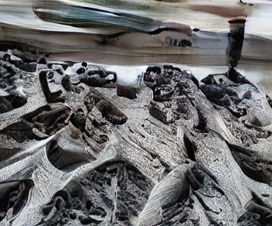
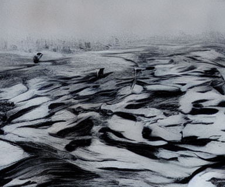

Berita: Titik Api Menyebar di Kalimantan, IKN Bahas Sasaran Bom Air
Kepala Otoritas Hidup dan Sumber Daya Alam (OIKN), Myrna A. Safitri, mengungkapkan lima titik kebakaran hutan dan lahan yang menjadi sasaran pembasahan udara melalui pengeboman air di kawasan Ibu Kota Nusantara (IKN) Kalimantan Timur.
Operasi ini dilakukan bersamaan dengan BNPB dan TNI AU untuk memadamkan titik api tersebut. Helikopter Caracal milik TNI AU berperan sebagai armada utama, memiliki kapasitas angkut kantong air seberat dua ton atau setara 2.000 liter.
OIKN menekankan operasi ini juga untuk membasahi area yang berpotensi terbakar dan mengurangi risiko perambatan api di tengah kondisi arah angin fluktuatif di lapangan.
Kemarau yang berlangsung lama telah mengakibatkan permukiman di tepian Waduk Jatigede, Sumedang, Indonesia. Akibatnya, air waduk semakin menyusut dan memicu kembali kebiasaan hidup masyarakat untuk tinggal lebih dekat dengan alam sekitar.
Garuda Shield 2026 di Baturaja hadirkan penerjun payung dari lima negara: Indonesia, Amerika Serikat, Jepang, India, dan Prancis. Latihan gabungan ini bertujuan memastikan manuver udara aman, presisi, serta sesuai standar operasional prosedur. Operasi ini mengusulkan tema "Komando Gabungan Bersama melaksanakan Operasi Gabungan Multinasional di Wilayah Jakarta, Bandung, Lampung, Baturaja dan Kalimantan Utara dalam rangka memelihara perdamaian dan menjaga stabilitas keamanan di kawasan".
Newcastle United mempertahankan rekor tidak terkalahkan dalam tiga pertandingan awal musim Liga Inggris 2026/27, dengan hasil imbang 2-2 melawan Bournemouth di St James' Park. Tim asuhan Matthias Jaissle harus puas berbagi angka setelah tim tamu berhasil membuka keunggulan 1-0 pada menit ke-35 dan mempertahankan kedudukan tersebut hingga babak pertama usai, dengan gol akhir dari Jacob Ramsey yang membuat Newcastle mencetak dua gol penyeimbang.
Kementerian Dalam Negeri menggandeng kementerian/lembaga lain untuk memperoleh data dan menilai prestasi pemerintah daerah dalam Apresiasi Pemda 2026 Batch II Regional Kalimantan. Tito Karnavian, Menteri Dalam Negeri, menyatakan Kemendagri tidak ingin menjadi satu-satunya pihak yang memberikan penghargaan kepada kepala daerah. Kementerian Perumahan dan Kawasan Permukiman menangkap peluang kolaborasi ini dengan mendapatkan hadiah dalam bentuk insentif fiskal untuk kategori Implementasi 3 Juta Rumah, sementara pemenang lainnya mendapat tambahan kuota rumah yang akan direnovasi. Dalam Batch I Regional Kalimantan Timur pada 5 Mei 2026, Maruarar Sirait menekankan pentingnya perumahan dalam penilaian kinerja kepala daerah dan menyatakan pemerintah tengah memperluas program renovasi rumah rakyat. Kemendagri juga menggelar Apresiasi Pemda 2026 sebagai upaya mendorong peningkatan kinerja pemerintah daerah melalui sistem apresiasi berbasis kompetisi sehat, dengan target Rp 1 trili
Manchester City mengalahkan Coventry City 1-0 di Liga Inggris setelah Erling Haaland mencetak gol tunggalnya. City tampil dominan dan mengekspresikan kekuatannya dengan meluncurkan tembakan dari umpan Cherki yang disambut oleh Haaland, membuka keunggulan 1-0 pada menit ke-26. Meskipun Coventry mencoba untuk melempar balik dalam babak kedua, City tetap memegang kendali dan Haaland sempat mencetak gol keduanya, namun dianulir karena berada di posisi offside.
Agus Harimurti Yudhoyono (AHY), ketua umum Partai Demokrat, menegaskan pentingnya profesionalisme dan netralitas bagi seluruh alat negara dalam pemilu untuk menjaga kedaulatan rakyat. Hal ini disampaikan AHY saat menyinggung kembali semangat reformasi yang menjadi akar kelahiran Partai Demokrat, termasuk TNI, Polri, intelijen, penegak hukum, Aparatur Sipil Negara (ASN), dan seluruh aparatur negara. AHY menekankan bahwa mereka semua adalah milik rakyat dan harus berdiri di atas golongan serta tidak memihak dalam politik praktis. Ia juga mengingatkan bahwa sejarah reformasi bukan untuk kembali ke masa lalu, tetapi untuk mengambil pelajarannya agar kekuasaan terus diawasi dan kedaulatan rakyat dihormati.
Brentford kalah 1-1 dari Sunderland dalam lanjutan Liga Primer Inggris, mengamankan poin imbang setelah Enzo Le Fee mencetak gol penalti untuk The Black Cats. Tim asuhan Keith Andrews unggul di babak kedua melalui Jaidon Anthony, namun kegembiraan publik Gtech Community Stadium tidak bertahan lama karena adanya aksi VAR yang menghentikan gol tersebut. Hasil imbang ini membuat Brentford kini menduduki peringkat ke-5 klasemen sementara Liga Primer Inggris dengan koleksi 5 poin dari tiga pertandingan, terpaut empat angka dari pemuncak klasemen Manchester City. Sunderland berada di posisi ke-11 dan mengumpulkan 4 poin dari tiga laga awal musim ini.
Hasil Liga Arab Saudi: Al Hilal Sempurna, Cristiano Ronaldo Cs Terjegal di Kandang Ittihad FC
Al Hilal mempertahankan rekor sempurna setelah menang 2-0 atas Al Shabab melalui gol Sergej Milinkovic-Savic dan penalti Ruben Neves. Debut Gabriel Martinelli turut mewarnai kemenangan Al Hilal setelah masuk pada menit ke-68. Al Nassr harus mengakui keunggulan 2-1 atas Ittihad, mengakhiri empat kemenangan beruntun Cristiano Ronaldo dan kolega.
Aktivitas erupsi Gunung Anak Krakatau di Selat Sunda berlangsung sejak Sabtu (5/9), menyebabkan abu vulkanik terbawa angin ke arah barat. Warga Bandar Lampung dan sekitarnya melaporkan paparan debu atau abu vulkanik, termasuk di ibu kota provinsi Lampung, Bandar Lampung. Debu juga ditemukan di wilayah Kemiling dan Kecamatan Natar, Kabupaten Lampung Selatan. Mengutip dari detikSumbagsel, petugas pos menyarankan masyarakat menggunakan masker dan pelindung mata saat beraktivitas di luar rumah apabila abu vulkanik mulai turun. Suwarno juga meminta warga tidak mendekati kawasan Gunung Anak Krakatau untuk menyaksikan erupsi, mengingat aktivitas masih berlangsung dan sebaran abu bergantung pada arah angin.
Pemprov Lampung meluncurkan program strategis untuk memperkuat generasi desa dengan dua program "Satu Desa Satu Sarjana STEM" dan "Satu Desa Satu Hafiz Qur'an". Ini menekankan pembangunan manusia sebagai fondasi utama kemajuan daerah.
Program ini mencakup beasiswa untuk 2.500 putra-putri terbaik desa, khususnya anak petani dan keluarga kurang mampu, untuk memperoleh pendidikan tinggi di bidang STEM.
Dengan program tersebut, Pemprov Lampung berharap menciptakan peningkatan kapasitas intelektual di desa atau "rural brain gain". Setiap desa diharapkan memiliki sumber daya manusia yang mampu mengembangkan inovasi sekaligus membantu menyelesaikan berbagai persoalan masyarakat setempat.
Program ini mencerminkan strategi pembangunan yang memadukan ilmu pengetahuan dan teknologi dengan keimanan dan ketakwaan, serta melahirkan generasi penghafal Al-Qur'an.
Agus Harimurti Yudhoyono, Ketua Umum Partai Demokrat, mengingatkan para kadernya agar tidak terlena dengan kekuasaan. Ia menekankan jabatan memiliki batas waktu dan harus digunakan untuk melayani rakyat. AHY meminta kader-partai berada di eksekutif, legislatif, maupun daerah senantiasa peka dan jujur terhadap kenyataan yang dirasakan oleh rakyat. Ia menegaskan keberadaan partai bukan hanya merayakan kemenangan atau mengejar kursi semata, tetapi mengawal program strategis agar benar-benar berdampak langsung pada kesejahteraan masyarakat. Selain itu, AHY juga meminta para kadernya untuk senantiasa hadir memberikan kerja nyata di tengah berbagai tantangan ekonomi yang masih dihadapi warga, mulai dari persoalan daya beli hingga ketersediaan lapangan kerja berkualitas.
PT Pegadaian menggandeng Kadin Indonesia melalui nota kesepahaman "Kolaborasi Strategis Kadin-Pegadaian" yang menekankan perluasan ekosistem emas di Indonesia. Ini mencakup pelatihan, pendampingan usaha, dan layanan keuangan berbasis emas untuk anggota Kadin. Pegadaian juga akan memperluas jaringan ATM Emas dan produk digital seperti aplikasi Tring by Pegadaian yang membantu pemrosesan transaksi emas melalui teknologi modern. Damar Latri dari Pegadaian menekankan pentingnya emas sebagai instrumen simpanan dan pendanaan bagi pelaku usaha, sementara Anindya Novyan Bakrie dari Kadin mengapresiasi kerja sama ini untuk memperluas akses keuangan berbasis emas.
Ringkas berita anak usia 8–12 tahun:
Gunung Anak Krakatau tercatat mengalami erupsi menerus intensitas tertinggi sejak September 4, 2026, hingga saat ini. Letusan bersumber dari kantong magma gunung tersebut tidak memiciki aktivitas pada gunung api lain di Indonesia. Berbagai alat pemantauan mengalami kerusakan akibat erupsi. Status Gunung Anak Krakatau tetap bertahan dalam Level III atau Siaga, dan masyarakat dianjurkan untuk menjauh dari kawasan tersebut dengan radius tiga kilometer.
Kepala Staf Kepresidenan (KSP), Jenderal (Purn) Dudung Abdurachman menghadiri Hari Bermuhammadiyah ke-13 di Universitas Muhammadiyah Jakarta. Ia mengingatkan pesan KH Ahmad Dahlan tentang hidup dalam Muhammadiyah bukan jabatan, menekankan pentingnya nilai manfaat bagi sesama dari ilmu dan pengabdian.
Kecelakaan maut melibatkan 3 mobil dan 1 motor mengakibatkan korban tewas dan terluka di Jembatan Kembang Kerep, Jakarta Barat. Mobil listrik BYD yang dikemudikan pria inisial K menabrak kijang innova B-1277-UIH yang dikendarai oleh seorang wanita berinisial YS dan anak perempuan berinisial ZZ (7). Oleh karena itu, mobil Innova mengalami oleng ke kanan. Mobil BYD kemudian menabrak lampu penerangan jalan, menyebabkan ringsek di tengah median jalan. Korban tewas termasuk pengemudi motor dan dua orang lainnya yang terluka.
Wamendagri Bima Arya menekankan pentingnya Koperasi Desa/Kelurahan Merah Putih (KDKMP) sebagai pusat pelayanan ekonomi desa terintegrasi. Ini akan menggabungkan kebutuhan masyarakat, layanan pemerintah, dan unit usaha bisnis untuk meningkatkan harga petani dan ketersediaan bahan makanan bagi konsumen. KDKMP juga diharapkan memasuki pasar Tiongkok melalui program Makan Bergizi Gratis (MBG) dan membantu ekspor produk lokal seperti kopi dari Jember ke tiga negara.
PT Bank Negara Indonesia (Persero) Tbk atau BNI memperluas layanan perbankan melalui wondrZ, tabungan khusus anak dan remaja yang dapat diakses via aplikasi wondr by BNI.
Produk ini membantu anak mengenal keuangan sejak dini dengan mendampingi orang tua dalam pengelolaannya. Peluncuran seremoni dilakukan pada ICE BSD 2026, menjadi bagian dari rangkaian BNI wondrX dan HUT ke-80 BNI.
Fitur utama wondrZ termasuk layanan pembukaan tabungan anak dalam satu layanan, transaksi digital bagi remaja usia 12 tahun ke atas, serta pemantauan saldo dan riwayat transaksi. Dengan data yang dipastikan terisi dengan benar, orang tua dapat mendampingi aktivitas finansial anak melalui fitur tersebut.
BNI wondrX 2026 menghadirkan beragam produk, layanan, dan aktivitas untuk mendukung kebutuhan keluarga sekaligus membangun literasi keuangan generasi muda.
Pemprov Banten meminta warga terdampak abu vulkanik dari Gunung Anak Krakatau untuk mengenakan masker. Gubernur Banten menekankan pentingnya kewaspadaan dan tenang, sambil tetap menjaga keamanan dengan menggunakan masker saat beraktivitas di luar rumah. Pemerintah terus melakukan pemantauan dan koordinasi dengan instansi lain untuk memastikan langkah mitigasi dapat dilakukan secara tepat.
Kementerian Kehutanan dan BMKG intensifkan operasi modifikasi cuaca (OMC) di Kalimantan Barat, Tengah, Jawa Timur untuk mengendalikan kebakaran hutan dan lahan (karhutla). Rekamannya dilakukan dari 3-9 September 2026 menggunakan pesawat CASA A2104. Operasi tersebut berdasarkan analisis meteorologi, potensi awan hujan, dan tingkat kerawanan karhutla yang tinggi di wilayah sasaran. Dukungan logistik dari BNPB akan dimaksimalkan untuk membantu penanganan sekaligus mencegah pembentukan kebakaran baru.
Satu keluarga tewas akibat tabrakan beruntun di Kembangan, Jakarta Barat pada Sabtu (5/9/2026) sore. Identitas korban adalah Andi Prasetyo dan anak tujuh tahun Zeline Zakeisha dengan istrinya Yeni Sumarti. Tabrakan terjadi saat minibus BYD menabrak Kijang Innova, yang dipimpin Hadi Wibawa, lalu menghadapi serangan dari belakang oleh sepeda motor dan mobil Fortuner. Keluarga tersebut meninggal dunia akibat kecelakaan beruntun ini, dengan Andi Prasetyo dilarikan ke RS Hermina Daan Mogot namun tewas dalam perawatan.
Dewan Perwakilan Rakyat Daerah Kota Bogor menyoroti permasalahan dalam pelaksanaan Anggaran Pendapatan dan Belanja Daerah 2025, terutama dengan SiLPA Rp 73 miliar yang masih menyisakan. Dewa meminta Pemerintah untuk mengoptimalkan penggunaan anggaran daerah agar program prioritas dan pelayanan publik dapat terealisasi optimal.
DPRD juga menyoroti skema pembiayaan operasional Biskita Trans Pakuan, yang menekankan pentingnya evaluasi pola penghitungan subsidi transportasi massal untuk memaksimalkan efisiensi anggaran. DPRD mencatat kualitas perencanaan dan hasil program juga menjadi pertimbangan dalam penyelesaian masalah ini.
Persoalan piutang daerah, seperti yang ditunjukkan oleh surplus APBD sekitar Rp 4,6 miliar, menandakan perlunya perbaikan dalam pelaksanaan anggaran. DPRD meminta pemerintah melakukan tindak lanjuti pada temuan laporan hasil pemeriksaan Badan Pemeriksa Keuangan untuk memastikan pengelolaan APBD berjalan transparan dan dapat dipertanggungjawabkan.
Target pendapatan daerah belum ter
Agus Harimurti Yudhoyono meminta kader Partai Demokrat untuk tetap fokus pada kondisi nyata rakyat. Dia mengingatkan bahwa masih banyak keluarga bekerja keras namun merasa hidup belum mudah, terutama dengan harga kebutuhan pokok yang menekan. AHY juga menyampaikan kesulitan tersebut disadari secara langsung olehnya saat berkunjung ke daerah-daerah dan mengingatkan bahwa kemiskinan masih menjadi perhatian utama rakyat. Dia meminta kader Partai Demokrat untuk ikut ambil bagian dalam setiap perbaikan yang dilakukan pemerintah demi meningkatkan kesejahteraan rakyat, termasuk dukungan dan kawal program strategis dari Presiden Prabowo Subianto.

PT Pertamina Patra Niaga Refinery Unit (RU) IV Cilacap secara resmi membuka tender terbuka untuk pekerjaan "PENGGANTIAN COLUMN ASSY 11C-1 AREA FOC I PT. PERTAMINA PATRA NIAGA DI RU IV CILACAP". Tender ini merupakan bagian dari upaya perusahaan dalam menjaga keandalan operasional dan memastikan keberlangsungan proses produksi di area Fuel Oil Complex (FOC) I. Diperkenankan bagi perusahaan yang memenuhi persyaratan untuk berpartisipasi dalam proses pengadaan tersebut, dengan pelaksanaan tender secara transparan dan akuntabel sesuai ketentuan dan tata kelola perusahaan.
Proses pendaftaran dapat dilakukan melalui situs web resmi di https://ptm.id/daftarGEPSMART . Peserta wajib melakukan registrasi sesuai dengan prosedur yang telah ditetapkan dalam sistem. Informasi lebih lengkap mengenai ruang lingkup pekerjaan, persyaratan administrasi, serta ketentuan teknis dapat diperoleh melalui tautan yang disediakan di sini.
Pertamina Patra Niaga RU IV Cilacap juga meminta seluruh calon peserta mengikuti proses dengan melakukan penda
Kecelakaan beruntun melibatkan sejumlah kendaraan yang menyebabkan tiga orang meninggal dunia dan empat lainnya luka-luka di Jalan Kembangan, Jakarta Barat. Kronologi kecelakaan menunjukkan minibus BYD bertabrakan dengan kijang innova dan mobil fortuner, akibat ditabrak dari belakang menyebabkan oleng ke kanan dan menghantam sepeda motor hingga meninggal dunia pengendara yang terlibat.
Sebaran abu Gunung Anak Krakatau meluas ke enam provinsi, mencapai 50.000 kaki di Samudra Hindia dan Pulau Jawa-Sumatera. BMKG memperingatkan penerbangan dan mengajak masyarakat menggunakan masker dan menjaga jarak saat berada diluar ruangannya. Lampung dibatalkan tiga kali karena risiko keselamatan, sementara Badan Geologi menyarankan meningkatkan kewaspadaan terhadap potensi hujan abu lebat di wilayah sebaran 50.000 kaki dan 3 kilometer dari pusat kawah Gunung Anak Krakatau.
Pemandu sepeda motor dua orang tewas dalam kecelakaan beruntun di Jalan Pandanaran, Semarang. Pohon setinggi 15 meter tumbang dan menimpa kendaraan mereka saat lalu lintas sedang lenggang.
Menteri Transmigrasi M. Iftitah Sulaiman Suryanagara mendukung perguruan tinggi menjadikan kawasan transmigrasi sebagai ruang penerapan ilmu pengetahuan, riset dan inovasi. Kementerian Transmigrasi mendorong pengembangan kampus satelit dengan menghadirkan sumber daya manusia unggul dalam transformasi transmigrasi. Ilmu pengetahuan tidak hanya berhenti di ruang kuliah, jurnal atau laboratorium tetapi harus hadir dan memberi manfaat langsung kepada masyarakat. Transformasi ini mencakup bidang pertanian, kesehatan, pendidikan, ekonomi, teknologi, lingkungan serta mempersiapkan warga lokal menjadi tenaga terampil untuk usaha dan pemasaran produk unggulan di wilayahnya sendiri.
Harga Bitcoin tertahan di 78.000 dolar AS, setelah gagal mempertahankan posisinya di level psikologis 80.000 dolar AS. Pasar kripto dipantau akan sangat dipengaruhi oleh arus dana ETF dan arah kebijakan Bank Sentral AS (The Fed). Investor perlu mencermati permintaan spot dan arus dana institusional untuk mengukur kekuatan pasar pasca reli. Arus ETF menjadi indikator krusial ketika Bitcoin bergerak di 77.000-80.000 dolar AS, dengan net outflow sekitar 201,9 juta dolar AS pada pekan Agustus lalu. Volatilitas pasar masih tinggi karena pasar akan semakin bergantung pada data ekonomi AS seperti tenaga kerja dan inflasi.
Mathis Molinie dikaitkan dengan Raisa setelah warganet menemukan kesamaian antara bagian mata mereka dalam beberapa unggahan media sosial. Pria tersebut, dugaan oleh netizen, merupakan chef asal Prancis yang dikaitkan dengan kehidupan asmara Raisa sejak Juni 2026.
PT Bank Negara Indonesia (Persero) Tbk atau BNI mendapatkan sertifikasi LSP dari Badan Nasional Sertifikasi Profesi dan ISO 21001:2018 serta Letter of Compliance ISO 30422:2022 melalui BNI Corporate University. Perolehan ini memperkuat tata kelola pengembangan sumber daya manusia di BNI melalui operasional LSP berlisensi dan standar internasional dalam BNI Corporate University, menandai keberhasilan seremoni tersebut pada 6 Agustus 2026. LSP telah memperoleh lisensi dari Badan Nasional Sertifikasi Profesi pada 19 Juni 2026 dan menyediakan tujuh skema sertifikasi yang mencakup bidang strategis, termasuk general banking hingga audit internal. Pada tahap awal, LSP BNI memperluas cakupan sertifikasi mengikuti perkembangan industri seperti digital banking, artificial intelligence, manajemen risiko dan teknologi informasi. Direktur Human Capital & Compliance BNI menegaskan keberadaan LSP menjadi fondasi penting dalam memastikan pengembangan kompetensi pegawai dilakukan secara terukur dan relevan dengan kebutuhan industri perbankan. Selain
BNI wondrX 2026 di ICE BSD, Tangerang menyambangi antusiasme pengunjung dengan diskon sepatu hingga 40 persen dan promo menarik lainnya seperti travel Rp 8 juta, KPR BNI Griya bunga mulai 1 persen per tahun efektif, serta program welcome reward bagi nasabah baru.
Babak pertama: Bakesbangpol DKI Jakarta menyebut ada 32 ribu lebih organisasi kemasyarakatan (ormas) di ibukota Indonesia. Ini diperkirakan akan membantu menjaga ketertiban dan keamanan.
Puluhan ribu ormas tersebut disyaratkan untuk berpartisipasi dalam hal ini, sementara Kesbangpol sebagai fasilitator melalui forum-forum binaan antar provinsi, etnis, dan umat beragama. Forum ini diharapkan menjadi garda terdepan dalam mencegah konflik.
Pada kesempatan itu, Analis Data dan Informasi Bakesbangpol DKI Jakarta, Bastian Widyatama mengakui peran ormas sebagai "garda terdepan" di lapangan. Ia menekankan pentingnya toleransi dalam masyarakat Jakarta untuk mencapai kota global.
Peringkat satu dalam Indeks Harmoni Indonesia 2025 dari Kementerian Dalam Negeri juga diperoleh oleh DKI, yang mendapat perhatian baik pemerintah dan masyarakat. Ormas di DKI terkait kasus kekerasan pada 27 Agustus lalu menjadi hal negatif setelah beredar dugaan keterlibatan salah satu organisasi kemasyarakatan.
Polda Metro J
Bos Swiss-Belhotel International menegaskan investasi di sektor akomodasi Indonesia tetap menarik meski tengah berbagai tantangan global. Ekosistem pariwisata dan budaya Tanah Air yang kuat mengundang wisatawan ke Bali, sementara portofolio baru seperti Ashva Swiss-Belresort di Ubud memperluas pasar dengan mitra baru dalam pengelolaan bisnis perhotelan.
Andik Vermansyah comeback ke Super League dengan debut di Borneo FC, sedangkan Igor Tolic belum menemukan arah dalam debut untuk Persib Bandung.
21 ekor orangutan di Kalimantan Tengah menunjukkan gejala Infeksi Saluran Pernapasan Akut (ISPA) akibat asap karhutla yang menyebabkan mereka terkena penyakit tersebut, mengakibatkan 86% dari populasi satwa ini jatuh sakit. Orangutan-orangutan tersebut langsung menjalani perawatan intensif di pusat rehabilitasi BOSF dan dipastikan akan kembali ke habitat alaminya setelah sembuh sepenuhnya.
Berita: Risiko Karhutla Meningkat, Patroli Habitat Bekantan Diperketat
BKSDA Kalsel memperketat patroli habitat bekantan di Tanah Laut untuk mencegah karhutla selama musim kemarau. Upaya ini bertujuan untuk menjaga ekosistem dan satwa liar, serta mengantisipasi dampak buruk dari kondisi cuaca yang kering tersebut.
Shilva Zohra dari Desa Julok Tunong, Aceh Timur berhasil meraih beasiswa penuh ke Hefei Normal University, Tiongkok. Keberhasilan Shilva ini menunjukkan bahwa anak desa juga mampu mengikuti seleksi pendidikan internasional melalui kerja keras dan perjuangan mandiri. Perjalanan Shilva menuju kampus di negeri Tirai Bambu tidak diraih secara instan, namun ia berhasil memperoleh Letter of Acceptance (LoA) sekaligus beasiswa penuh untuk belajar di Negeri Tirai Bambu melalui persiapan yang dilakukannya sendiri. Shilva merupakan siswi kelas XII di SMA Unggul Cut Nyak Dhien Langsa, dan telah mendapat pemanggilan dari Kedutaan Besar Republik Rakyat Tiongkok di Jakarta setelah memperoleh LoA dan beasiswa penuh.
Toge Inumaki, penyihir tingkat Semi 1 dalam Jujutsu Kaisen, dikenal karena keunikan dan keterbatasannya. Dicatat sebagai siswa SMA terbaik dengan peringkat Cursed Speech (Kata Terkutuk) di level semi-1, Toge memiliki teknik kutukan yang berbahaya namun memang membantu dalam pertempuran. Meskipun pendiam dan sering menggunakan nama-nama isian untuk menghindari kutukan, kekuatannya meliputi perintah seperti "Tidur", "Meledak", "Hancur" dan "Jangan Bergerak". Ia merupakan aset penting bagi SMA Jujutsu Tokyo, terutama dalam pertempuran besar.
Menteri Hak Asasi Manusia (HAM) Natalius Pigai menyarankan hukum kasasi atas putusan banding dalam kasus penyiraman air keras terhadap Andrie Yunus, yang meringankan hukuman bagi sebagian terdakwa. Putusan majelis hakim banding telah membuktikan para terdakwa bersalah dan harus dipecat dari dinas militer karena tindakan mereka dilakukan saat pemerintah berjibaku mempertahankan iklim HAM, demokrasi, dan Kedigdayaan sipil.
AS Roma menang dramatis 2-1 atas Atalanta dalam pertandingan Serie A musim ini, mempertahankan rekor sempurna dengan tiga kemenangan beruntun. Pelatih Gian Piero Gasperini mengakui semakin kuat mentalitas skuad Roma setelah mampu bangkit di menit-menit akhir. Roma akan fokus pada Liga Champions dan melawan Fenerbahce pada 10 September, sementara Atalanta kalah dengan keunggulan satu gol.
Ringkasan Berita:
Kecelakaan beruntun melibatkan empat mobil dan dua sepeda motor di Kembangan Jakbar, Jakarta Barat, menewaskan tiga orang satu keluarga dalam kecelakaan Sabtu sore tersebut. Empat korban lainnya terluka dan menjalani perawatan medis intensif setelah kejadian yang mengakibatkan empat orang luka-luka. Korban meninggal dunia merupakan pasangan suami istri beserta anak balita mereka, sedangkan tiga korban tewas adalah seorang pengemudi motor dan dua penumpang mobil lainnya.
Ustaz Riza Muhammad membagikan aktivitas olahraganya di media sosial dengan menggunakan baju terbuka, menyebabkan rasa tidak nyaman pada istri-nya, Indri Giana. Ia mengakui kebiasaan sang suami tersebut dan menegaskan lebih menyukainya jika pakaian Riza digunakan yang tertutup.
Kerangka Mozza Axilla Gunarsa (18), warga Semarang yang hilang selama setahun akhirnya ditemukan di jurang Tol Semarang-Solo. Polisi menangkap tersangka MDVS, berusia 22 tahun, dalam kasus pembunuhan korban tersebut. Hubungan antara kedua pihak diketahui melalui media sosial TikTok sekitar Mei 2025 dan berlanjut hingga perselisihan di wilayah Candisari pada Juni 2025, akhirnya menimbulkan kekerasan. Tersangka diduga membunuh korban dengan cara membebaskan tubuhnya menggunakan kain karung sebelum dibuang ke jurang Tol Semarang. Polisi masih melanjutkan penyidikan untuk mengungkap motif pembunuhan dan tersangkat lainnya di kasus ini.
Presiden RI Prabowo Subianto menerima Duta Besar Amerika Serikat untuk ASEAN Kevin Kim dan Kuasa Usaha ad interim Joy M. Sakurai pada Sabtu sore di Hambalang, Jawa Barat. Pertemuan membahas upaya meningkatkan hubungan antara Indonesia dan AS serta stabilitas di kawasan.
Anak Krakatau kembali mengalami erupsi, memicu kekhawatiran tentang keselamatan pelayaran di perairan Selat Sunda. Aktivitas vulkanik tersebut sempat berlangsung hingga Sabtu dini hari dan belum menimbulkan dampak langsung terhadap aktivitas penyeberangan dari Pelabuhan Bakauheni, Lampung, ke Pelabuhan Merak, Banten. Kapal masih melayani lintasan sejalan dengan operasional normal. KSOP Kelas IV Bakauheni menjamin tidak ada pengurangan armada kapal yang beroperasi dan jumlah perjalanan atau trip penyeberangan akan dihitung setelah periode layanan ditutup pada pukul 08.00 WIB. Tim ditempatkan di sejumlah wilayah, termasuk Pulau Sebesi yang lokasinya relatif dekat dengan Gunung Anak Krakatau untuk melakukan pemantauan terhadap kondisi perairan Selat Sunda.
Pemerintah Provinsi Lampung meminta warga untuk meningkatkan kewaspadaan setelah erupsi Gunung Anak Krakatau menyebabkan debu vulkanik terbawa ke beberapa wilayah. Masyarakat dianjurkan menggunakan masker saat beraktivitas di luar ruangan dan mengawasi perkembangan aktivitas gunung dengan sumber informasi resmi. Badan Geologi merekomendasikan jarak 3 kilometer dari pusat erupsi untuk masyarakat, pengunjung, wisatawan, dan pendaki.
Industrialisasi pencak silat sangat penting bagi Indonesia untuk mempersiapkan tim Olimpiade dengan kualitas tinggi, kata Gus Nabil, Wakil Ketua Umum Pengurus Besar Ikatan Pencak Silat Indonesia (PBIPS). Industri pencak silat harus menjadi bagian dari agenda besar PB IPSI di bawah kepemimpinan Sugiono. Langkah ini perlu berjalan dengan pembinaan atlet dan profesionalisasi pelatih serta wasit-juri, sambung Gus Nabil. Ekosistem industri yang sehat mempertemukan olahraga prestasi, kompetisi, promosi, pelaku usaha, dan komunitas pencak silat dalam satu mata rantai yang saling menguatkan. Sertifikasi profesionalisme juga diperlukan untuk meningkatkan kualitas atlet dan memberikan pengakuan kepada para pekerja ekosistem pencak silat.
Atletico Madrid dipermalukan Athletic Bilbao 0-3 di San Mames, setelah gagal bangkit dari dua gol cepat awal babak kedua. Julian Alvarez kalah dalam debutnya sebagai pemain utama Diego Simeone, sementara Marcos Llorente mengekspresikan kebutuhan Atletico untuk kembali mendapat gelar tersebut. Atletico Madrid memulai pertandingan dengan harapan yang tinggi, namun gagal melanjutkan dan akhirnya harus mengakui kekalahan telak 0-3.

Gubernur Sumatera Utara Muhammad Bobby Afif Nasution meresmikan Jembatan Bailey di Tapteng pada Kamis 3 September 2026, menjadi salah satu jembatan yang dibangun melalui kolaborasi TNI dan masyarakat sebagai bagian dari upaya penanganan dampak bencana. Bobby mengajak seluruh pihak untuk menjaga dan memantau kondisi jembatan agar dapat terus digunakan dengan baik, sambungnya. Jembatan tersebut dihubungkan Dusun 6 dan Dusun 7 Desa Parjalihotan, Kecamatan Pinangsori, Kabupaten Tapteng, membantu akses masyarakat menuju sekolah. Bobby juga berdialog langsung dengan masyarakat untuk memberikan modal usaha bagi mereka melalui kolaborasi Pemprov Sumut dan Bank Sumut.
Berita: Klasemen dan Top Skor Liga Arab Saudi
Al Hilal kalah dari Al Ittihad dengan skor 2-1, mengakhiri tren positif Cristiano Ronaldo dan rekan-rekannya. Ivan Toney memimpin daftar top skor dengan enam gol. Sementara itu, Al Nassr tertahan di posisi kedua dengan 12 poin setelah kekalahan dari Al Ittihad.
Al Hilal mengoleksi 5 kemenangan dan lima pertandingan tanpa kekalahan dalam Liga Arab Saudi musim ini, sementara Ivan Toney mencetak enam gol. Ronaldo baru mempersembahkan dua gol di laga tersebut.
Putin bertemu utusan AS di Kremlin, menegaskan Rusia telah menerima permintaan melalui kanal resmi dan mengeluarkan perintah terkait penghentian serangan ke Kyiv. Putin menyatakan Ukraina telah mengurangi serangan ke wilayah Rusia termasuk Moskow, namun negosiasi gencatan senjata selama tiga hari belum terselesaikan. Trump membawa proposal untuk penyelesaian konflik yang tidak disepakati oleh kedua pihak.
Abraham Samad, mantan Ketua KPK, mengkritik sistem pemberantasan korupsi Indonesia yang terkendala oleh kekuasaan aparat negara dan kurangnya independensi dalam menegakkan hukum. Menurutnya, korupsi sekarang berbentuk "state capture corruption", dimana kepentingan tertentu mempengaruhi kebijakan dan institusi negara.
Ketua Dewan Pers Komaruddin Hidayat mengatakan bahwa ruang digital dapat menjadi sumber informasi yang potensial untuk hoaks, sensasi, dan emosi. Masyarakat harus berhati-hati dalam menggunakan informasi di media sosial dan memilih situs web yang kredibel.
Menteri Kebudayaan Fadli Zon menekankan pentingnya kebudayaan sebagai investasi bagi Indonesia, bukan hanya sebatas ornamen. Ia menyatakan bahwa budaya adalah modal ekonomi, soft power, dan kekuatan yang mempertahankan negara di tenggat era perubahan.
Rhenald Kasali mengemukakan paradoks teknologi: meskipun teknologi membuat pengetahuan tersedia di mana-mana, tidak otomatis membuat manusia lebih berdaya. Algoritma dan internet dapat membentuk identitas seseorang, tetapi juga
Komisariat Daerah APHI Sumatera Selatan (Sumsel) dan Lampung menegaskan komitmennya dalam memperkuat pemberdayaan masyarakat sebagai strategi utama pencegahan kebakaran hutan dan lahan (karhutla). Langkah ini merupakan tindak lanjut dari Instruksi Presiden (Inpres) Nomor 11 Tahun 2026 yang memberikan arah lebih tegas dalam pengendalian karhutla.
Ketua Komda APHI Sumsel, Iwan Setiawan di Palembang, menyatakan bahwa penegakan larangan membuka lahan dengan cara membakar harus diimbangi dengan penyediaan alternatif pembukaan lahan tanpa bakar serta penguatan kelembagaan pencegahan di tingkat desa. Program Desa Mandiri Cegah Api (DMPA) dan Desa Bebas Api menjadi bukti bahwa pendekatan pencegahan tidak bisa hanya mengandalkan upaya pemadaman.
Pihaknya mengevaluasi pengecualian berbasis kearifan lokal, yang dinilai sebagai prakondisi penting untuk memastikan kesamaan langkah seluruh pihak. Dukungan dan kolaborasi multipihak sangat diperlukan untuk memper
Gunung Krakatau meletus pada 1883 menjadi salah satu peristiwa vulkanik paling dahsyat dalam sejarah manusia, mengakibatkan dampak global yang berdampak ke Jepang dan negara-negara di Belahan Bumi Utara. Dalam laporan Badan Meteorologi Jepang (JMA), aktivitas Gunung Anak Krakatau tidak menimbulkan tsunami atau perubahan permukaan laut signifikan, meski masih terus berlanjut hingga periode pemantauan terakhir. Letusan ini menjadi perhatian dunia karena sejarah dahsyat Gunung Krakatau pada 1883 dan dampaknya yang besar di seluruh dunia.
Universitas Brawijaya mengembangkan pelayanan dengan tingkat kepuasan 98% dari berbagai stakeholder. Indeks Kepuasan Masyarakat (IKM) dilaporkan setiap tahun, menunjukkan peningkatan dalam kualitas layanan universitas. Diharapkan iklim kerja yang baik dapat terus ditingkatkan untuk mempertahankan tingkat kepuasan tersebut pada masa mendatang.
Ringkasan Berita:
Belanja melalui toko online luar negeri semakin mudah bagi anak usia 8-12 tahun. Marketplace global seperti Amazon, eBay, AliExpress dan USA memberikan akses ke produk internasional yang tidak tersedia di Indonesia. Namun, konsumen harus menghadapi tantangan seperti pembayaran metode internasional atau pengiriman lintas negara.
Jasa perantara beli barang luar negeri (Jasabelanjaonline.com) membantu solusi tersebut dengan memfasilitasi transaksi dan pengiriman. Layanan ini menawarkan alternatif bagi konsumen yang mengalami kendala pembayaran atau tidak menyediakan pengiriman ke Indonesia.
Pilihan untuk belanja di eBay, Amazon, AliExpress, dan USA semakin luas karena banyak produk tersedia di pasar e-commerce internasional. Jasa titip ini membantu memudahkan proses transaksi dan pengiriman barang dari toko luar negeri ke Indonesia tanpa harus menangani seluruh tahapan sendiri.
Barang yang dibeli melewati prosedur pemeriksaan sebelum dikirimkan, termasuk kemasan awal. Layanan ini mencantumkan fasilitas free repackaging dalam kondisi tertentu untuk memastikan barang siap diterima di Indonesia.
Chelsea dan Arsenal akan bertemu dalam duel sengit pada Emirates Stadium sebagai dua tim London yang sama-sama memulai musim dengan kemenangan. Chelsea memiliki rekor kuat atas Arsenal di sembilan pertemuan terakhir Liga Inggris, sedangkan Arsenal baru menghadapi satu tembakan tepat sasaran dari Chelsea dalam empat pertandingan tandang mereka sejak 2018/2019. Chelsea akan ditempuh oleh Xabi Alonso yang telah memberikan tanda awal positif dengan dua kemenangan di awal musim, mengejar rekor Antonio Conte (4-3-3) dari Arsenal dalam empat pertandingan pembuka Liga Inggris dan lima gol atau lebih dalam 18 pertandingan Liga Inggris.
Agus Harimurti Yudhoyono (AHY), Ketum Partai Demokrat, menekankan pentingnya membangun ketahanan dan kemandirian Indonesia di bidang pangan, energi, air, serta konektivitas. Dalam hal ini, AHY mengharapkan ekonomi tumbuh bersama rakyat untuk meningkatkan kekayaan alam yang dapat dimanfaatkan dengan tetap mempertahankan lingkungan.
PT Industri Jamu Dan Farmasi Sido Muncul memberikan pelatihan meracik jamu untuk 100 pedagang angkringan di Surakarta dan sekitarnya, dalam rangka menyambut HUT ke-75 perusahaan. Pelatihan ini dilakukan dengan tujuan memperkenalkan budaya minum jamu dan melestarikan warisan tradisi leluhur kepada generasi muda.
Wakil Gubernur Jawa Timur Emil Dardak menjadi kejutan dalam konser 40 tahun Kahitna, membawakan lagu "Lajeungan" bersama Hedi Yunus dan Mario Ginanjar. Kemunculannya mendapat sambutan meriah dari penonton Soulmate yang dikenal sebagai bintang tamu utama. Ini bukan kolaborasi pertama Emil dengan grup, lho! Lagu "Lajeungan" merupakan salah satu lagu penting dalam perjalanan musik Kahitna sejak 1986.
Minggu lalu, sekitar 50 anggota Staf Gabungan Militer Amerika Serikat harus menjalani tes poligraf setelah berita kacerian mengenai kekurangan amunisi AS dalam konflik melawan Iran. Laporan The New York Times menyebutkan bahwa para perwira militer serta pegawai sipil di Departemen Pertahanan Amerika Serikat ditanyai apakah mereka membocorkan informasi kepada media. Juru Bicara Pentagon, Sean Parnell, menolak berkomentar mengenai masalah internal kepegawaian maupun penyelidikan yang sedang berlangsung. Dalam laporan sebelumnya, AS telah menghabiskan hampir seluruh persediaan rudal jelajah siluman dan telah menembakkan rudal Tomahawk dalam jumlah setara dengan pengadaan selama satu dekade di masa damai. Pemerintahan Donald Trump juga mencoba mempertegas kebijakan perdagangan negatif jika The Federal Reserve tidak menurunkan suku bunganya, mengancam akan menghentikan perdagangan dengan negara-negara lain.
Agus Harimurti Yudhoyono (AHY), Ketua Umum Partai Demokrat, menyatakan bahwa partai tersebut akan mendukung dan mengawal kebijakan pemerintah yang memberikan manfaat bagi rakyat. AHY menekankan pentingnya kader Demokrat memastikan implementasi kebijakan pemerintah berpihak kepada masyarakat, serta menyatakan bahwa partai tetap harus jujur terhadap kondisi dan perasaan rakyat.
Timnas Indonesia dijadwalkan menjadi tuan rumah untuk kategori Premier Division dalam FIFA ASEAN Cup 2026, dengan peluang diperkuat pemain terbaik berkarier luar negeri. Tim ini diprediksi memiliki kekuatan jauh lebih kuat dibandingkan saat tampil di Piala AFF 2026 karena potensi kembalinya sejumlah pemain diaspora yang bermain di Eropa.
Bandara Internasional Soekarno-Hatta ditutup sementara akibat sebaran abu vulkanik dari Gunung Anak Krakatau, yang berpotensi membahayakan keselamatan penerbangan. Direktorat Jenderal Perhubungan Udara menutup bandara mulai 01.30 WIB hingga 05.30 WIB setelah hasil paper test menunjukkan indikasi positif abu vulkanik di area bandara. Dampak ini terhadap penerbangan internasional dan domestik mencakup pembatalan, penundaan, dan pengalihan rute ke beberapa destinasi seperti Singapura, Hong Kong, Sydney, Seoul/Incheon, Doha, Amsterdam, Kuala Lumpur, Lampung, Denpasar, dan Surabaya. Maskapai terus melakukan pemantauan dan koordinasi intensif dengan pihak lain untuk mengantisipasi dampak berantai yang mungkin timbul dari kondisi ini.
Gunung Anak Krakatau kembali aktif dengan erupsi menerus yang memicu fenomena lava fountain serta dentuman hingga wilayah Banten, Lampung, Jawa Barat. Badan Geologi menyebut pertumbuhan tubuh gunung belum membahayakan stabilitas lereng dan tidak berpotensi tsunami. Erupsi ini menunjukkan peningkatan intensitas pada pukul 23.07 WIB dan masih berlangsung hingga dini hari. Masyarakat di sekitar Gunung Anak Krakatau disarankan untuk mematuhi rekomendasi teknis demi keselamatan saat aktivitas gunung aktif terjadi.
Kota Palembang, Sumatera Selatan terkenal dengan cuaca yang kering. Namun, kondisi udara di sana menjadi sangat buruk karena adanya karhutla atau kebakaran hutan dan lahan. BMKG menyebutkan bahwa kualitas udaranya saat ini berada pada level sangat tidak sehat akibat dampak dari karhutla tersebut.
Berita: Karhutla di Aceh Barat Meluas Jadi 13 Hektare
Petugas terkendala akses dan sumber air dalam menghadapi karhutla yang meluas jadi 13 hektare di Aceh Barat. Api sulit dipadamkan karena kondisi lahan gambut tersebut.
Tol Palindra Sumsel melalui kecelakaan bus dan mobil, 14 orang mengalami luka. Kecelakaan terjadi pada Sabtu pagi di Jalan Tol Palembang-Indralaya KM 9+800, Ogan Ilir, Sumatera Selatan. Bus DAMRI dan ALS melibatkan sebanyak 3 kendaraan yang mengalami kecelakaan dari arah Palembang menuju Indralaya. Korban luka termasuk pengemudi dan penumpang bus, dengan rinciannya: 6 korban dilarikan ke RS Arroyan, 6 dirujuk ke RSMH Palembang, dan 2 di RS Tanjung Senai. Petugas Polres Ogan Ilir melakukan penyelidikannya untuk mengetahui kronologi kejadian dan penyebab terjadinya kecelakaan tersebut.
Anggota DPR Harris Turino meminta RUU Perampasan Aset menekankan perlunya penerapan terhadap seluruh tindak pidana, termasuk perbankan dan perpajakan. Menjelaskan bahwa kejahatan di sektor ini juga memiliki dampak serius.
DPR telah berkomitmen untuk menghentikan RUU Perampasan Aset pada 15 Desember 2026 dan menunggu daftar inventarisasi masalah (DIM) dari pemerintah. Harris meminta pengecualian tidak boleh ada dalam tindak pidana perbankan.
Draf RUU ini mencakup 13 tindak pidana, termasuk korupsi, narkotika dan psikotropika, terorisme, penyelundupan manusia, senjata berbahaya, lingkungan hidup, pertambangan, kelautan perikanan, serta perdagangan orang.
Ringkasannya:
Majelis Hakim Pengadilan Militer Tinggi II Jakarta membatalkan pidana pemecatan terhadap dua prajurit TNI yang ditunjuk sebagai penyiraman air keras pada aktivis KontraS, Andrie Yunus. Pertimbangan hakim meliputi semangat pembentukan Undang-Undang Nomor 1 Tahun 2023 tentang KUHP Nasional dan hasil pemeriksaan psikologi yang menunjukkan kedua terdakwa masih layak dipertahankan sebagai prajurit.
Kementerian Dalam Negeri (Kemendagri) mengingatkan Tim Pemantauan, Pengawalan, dan Percepatan Pertumbuhan Ekonomi Daerah untuk mengevaluasi persoalan yang membatasi pertumbuhan ekonomi di setiap daerah. Tim tersebut bertugas melakukan pemantauan terhadap perkembangan ekonomi dengan memperhatikan kondisi masing-masing daerah, dan mengawal penyelesaian masalahnya. Tugas intinya meliputi koordinasi pelaksanaan pemantauan sesuai wilayah, pengumpulan data dan informasi, verifikasi data dan informasi yang disampaikan Pemda, serta analisis dan evaluasi sebagai bahan pertimbangan pimpinan. Tim juga diminta mengawal pemerintah dalam mendorong pertumbuhan ekonomi melalui sembilan langkah konkret seperti percepatan realisasi APBD, APBN, dan infrastruktur pemerintah serta perluasan kesempatan kerja, produksi pertanian, peternakan, industri manufaktur sesuai potensi lokal. Tomsi Tohir, Sekjen Kemendagri, menekankan bahwa diagnosis harus tepat berdasarkan karakteristik masing-masing daerah dan setiap langkah yang dibutuhkan juga berbeda-b
Agus Harimurti Yudhoyono (AHY) menyampaikan pesan dalam Pidato Politik Hari Ulang Tahun ke-25 Partai Demokrat. AHY meminta para kader untuk kerja nyata demi kepentingan rakyat, menggunakan kekuasaan untuk melayani di pemerintah dan perjuangkan aspirasi di parlemen. Dia juga menekankan pentingnya menjaga integritas bagi kader muda Demokrat dan tidak menganggap politik sebagai sarana mencari suara saat pemilu saja, tetapi bekerja untuk rakyat demi kemajuan Indonesia.
Berita Apresiasi Pemerintah Daerah Berprestasi 2026: Batch Kedua Menggali Nilai Baru
INFO TEMPO - Dalam batch kedua Apresiasi Pemerintah Daerah Berprestasi 2026, Kementerian Dalam Negeri mempertajam indikator penilaian kinerja pemerintah daerah. Batch ini menghadirkan empat kategori baru: Akses dan Kualitas Layanan Kesehatan, Implementasi Program 3 Juta Rumah, Pengelolaan Sampah dan Lingkungan Asri, serta Inovasi.
Pada batch pertama, penilaian meliputi Penanggulangan Kemiskinan dan Stunting, Entrepreneur Government/Creative Financing, Penurunan Tingkat Pengangguran, serta Pengendalian Inflasi. Batch kedua menambahkan kategori baru yang mempertajam isu sampah dan lingkungan asri.
Menteri Dalam Negeri Muhammad Tito Karnavian mengatakan penerapan indikator tersebut sesuai dengan pesan Presiden Prabowo Subianto, sejalan dengan Asta Cita atau delapan misi utama pembangunan nasional.
Batch kedua ini menekankan isu sampah dan lingkungan asri yang disampaikan Presiden dalam Rap
Gubernur Kalbar Ria Norsan menjadi sorotan setelah membentak mahasiswa saat diskusi penanganan karhutla, menjadikannya terpopuler dalam berita terbaru. Foto dengan pria misterius juga viral dan status tersangka Ruben Onsu dijadikan senjata oleh Sarwendah untuk rebut hak asuh anak menjadi topik utama.
Ringkas Berita Anak Usia 8-12 Tahun:
Pemecatan dua terdakwa dalam kasus penyiraman air keras ke Andrie Yunus, Wakil Koordinator Eksternal Komisi untuk Orang Hilang dan Korban Kekerasan (KontraS), dihargai sebagai "penganiayaan biasa" oleh koalisi Masyarakat Sipil. Putusan banding mengurangi pidana penjara dan membatalkan pemecatan, mengekspresikan kegagalan peradilan militer dalam membawa konsekuensi hukum yang tegas terhadap pelaku serangan keras. Koalisi menduga putusan ini berbahaya karena mengabaikan dampak permanen dan penyalahgunaan akses institusional, memperlihatkan kegagalan sistem peradilan militer dalam menangani kasus kejahatan umum terhadap warga sipil.
Anak Krakatau erupsi, Bandara Soetta ditutup sementara hingga pukul 05.30 WIB. Direktorat Jenderal Perhubungan Udara mengumumkan bandar udara internasional Soekarno-Hatta (CGK) ditutup mulai pukul 01:30 WIB s.d 05:30 WIB karena adanya indikasi sebaran abu vulkanik. Penerbangan terdampak antara lain menuju dan dari Singapura, Hong Kong, Sydney, Seoul/Incheon, Doha, Amsterdam, dan Kuala Lumpur.
Belajar dari keterlambatan dalam mengenali masalah dan memahami perilaku konsumen, buku "Learn from Other People's Business Failures & Mistakes" membantu anak usia 8–12 tahun belajar bagaimana mencari tahu apa yang salah dengan bisnis mereka. Dalam dunia bisnis, kegagalan seringkali menjadi sumber pengetahuan tentang risiko dan cara menghindarinya. Buku ini menunjukkan bahwa tidak ada strategi sempurna untuk selalu sukses, namun penting memiliki kemampuan mendeteksi masalah sejak dini dan memperbarui diri terus-menerus dengan tren perubahan dalam industri.
Gunung Anak Krakatau masih mengalami erupsi dengan status level III atau siaga, terdengar dentuman akivitas gunung dari Pos Pantau Pasauran. Periode pengamatan dilakukan pada 18.00-24.00 WIB kemarin, cuaca mendung dan asap kawah tidak teramat. Petugas juga melaporkan satu kali gempa letusan/erupsi dengan amplitudo 70 mm dari Pos GAK Pasauran. Kondisi saat ini diinterpretasikan sebagai 'Lava Fontain' atau lava air mancur, cuaca berawan hingga mendung, angin sedang ke arah utara dan barat laut, suhu udara sekitar 27.2-27.8°C dengan kelembaban 69-73%.
Konser Kahitna 40 Tahun: Carlo Saba Kehadiran Virtual, Emosi Terpanas.
Hujan abu vulkanik erupsi Gunung Anak Krakatau (GAK) melanda sejumlah wilayah Pandeglang, Banten. BPBD mengingatkan warga gunakan masker saat beraktivitas dan meningkatkan kewaspadaan ketika berkendara untuk mencegah dampak negatif dari abu vulkanik tersebut.
Pria yang memasuki usia 40 tahun ke atas seringkali mengalami peningkatan tekanan darah, meskipun mereka tidak mengetahui alasan utamanya. Ada beberapa kebiasaan sehari-hari yang bisa mempengaruhi kondisi ini:
1. **Pola Tidur Tidak Teratur**: Kurang tidur dapat meningkatkan tekanan darah.
2. **Minum Alkohol**: Konsumsi alkohol, terutama dalam jumlah besar, berkaitan dengan peningkatan tekanan darah tinggi.
3. **Merokok**: Merokok membawa risiko kesehatan yang lebih besar dan dapat mempengaruhi kondisi jantung.
Untuk mengurangi dampak negatif dari kebiasaan-kebiasaan tersebut, penting untuk menjaga pola hidup sehat seperti tidur secara rutin, minum alkohol dalam jumlah terbatas atau tidak sama sekali, dan berhenti merokok.
Penyelidikan terkait foto karangan bunga di depan kantor Bank Sulawesi Tengah viral melibatkan oknum polisi dari 'Istri Sah'. Karangan bunga tersebut mengekspos seorang anggota Polri yang hilang. Propam Polda Sulteng menyatakan telah melakukan penyelidikan dan pendalaman terkait informasi tersebut, dengan harapan dapat mendapatkan fakta kebenaran dari persoalan tersebut.
Ustaz Riza Muhammad, penampilan saat berolahraga di gym dikritik oleh istri karena menggunakan pakaian terlalu terbuka ketika latihan. Indri Giana mengakui keberatan tersebut setelah video Ustaz Riza ditemukan dengan baju tanpa lengan yang menunjukkan bagian tubuhnya, termasuk kelihatan bagian ketiaknya. Meski demikian, Ustaz Riza menjelaskan bahwa dalam perspektif fikih dia tidak melanggar batasan mengenai aurat laki-laki saat berolahraga dan menilai konten lain yang memperlihatkan dirinya dengan pakaian tertutup.
Gubernur DKI Jakarta Pramono Anung menerbitkan Peraturan Gubernur (Pergub) untuk menyesuaikan tarif layanan kesehatan milik Pemprov DKI Jakarta, tetapi tidak berlaku bagi masyarakat yang menggunakan BPJS Kesehatan. Tarif pelayanan di DKI Jakarta saat ini tergolong rendah sehingga perlu disesuaikan untuk memenuhi standar jaminan kesehatan JKN-KIS dan layanan VIP di beberapa RSUD milik Pemprov DKI. Kebijakan tersebut tidak ditujukan untuk membebani masyarakat kurang mampu, penyandang disabilitas, atau lanjut usia; tetapi dilakukan agar subsidi pemerintah tidak diberikan kepada mereka yang sebenarnya memiliki kemampuan untuk membayar biaya kesehatan.
Bandar Udara Internasional Soekarno-Hatta ditutup sementara pada Ahad karena sebaran abu vulkanik Gunung Anak Krakatau. 33 penerbangan terdampak, dengan 16 pembatalan, tujuh penundaan dan lima penjadwalan kembali. Rute yang terkena dampak meliputi internasional ke Singapura, Hong Kong, Sydney, Seoul/Incheon, Doha, Amsterdam, dan Kuala Lumpur; domestik dari Lampung menuju Denpasar dan Surabaya. Ditjen Perhubungan Udara menekankan keselamatan sebagai prioritas dalam setiap perubahan jadwal penerbangan.
Gunung Anak Krakatau masih erupsi sejak pukul 12.18 WIB tanpa jeda hingga Sabtu malam, mencapai ketinggian 150 meter di atas puncak dan terbawa angin ke barat laut menuju Lampung. Kolom abu vulkanik mulai turun di Bandar Lampung sekitar pukul 19.30 hingga 20.00 WIB, mencapai wilayah Tanjung Karang, Bandar Lampung dan Tanggamus. Petugas melaporkan aktivitas erupsi terjadi setiap hari selama ini tanpa jeda sejak pukul 12.18 WIB, menunjukkan Gunung Anak Krakatau masih aktif beroperasi meski sudah lama dianggap tidak lagi memiliki potensi untuk menghancurkan gunung tersebut.
TNI AD dan US Army mengadakan kegiatan Super Garuda Shield 2026 yang bertujuan meningkatkan keterampilan taktis dalam berperang di hutan. Acara ini dilaksanakan di Baturaja, Sumatra Selatan, untuk memperkuat kerjasama antar negara dan profesionalisme tim.
Gubernur Lampung, Rahmat Mirzani Djausal, mengingatkan pentingnya penggunaan teknologi tepat guna untuk mempercepat hilirisasi komoditas berbasis desa di Provinsi Lampung. Ia menekankan bahwa hal ini tidak hanya membantu dalam menjawab kebutuhan masyarakat sekaligus meningkatkan daya saing daerah, tetapi juga dapat menciptakan lapangan kerja dan memperkuat ketersediaan pangan lokal.
Dalam seminar nasional IPTEK Terapan yang diselenggarakan di Politeknik Negeri Lampung, Gubernur Mirza menekankan pentingnya penggunaan teknologi dalam hilirisasi komoditas. Ia memaparkan potensi sumber daya pangan yang dimiliki Provinsi Lampung dan mengatakan bahwa sebagian besar komoditas masih dijual dalam bentuk mentah, sehingga nilai tambah dan peluang penciptaan lapangan kerja belum sepenuhnya dinikmati masyarakat setempat.
Gubernur menekankan pentingnya dukungan sains, riset, inovasi, dan teknologi yang sesuai dengan kebutuhan di lapangan. Ia mengatakan bahwa Politeknik Negeri Lampung dan perguruan tinggi lainnya harus berperan lebih besar sebagai pusat
Gerakan 1.000 Angkringan Sido Muncul, dilaksanakan oleh PT Industri Jamu Dan Farmasi Sido Muncul (Sido Muncul) di Solo untuk mendukung "Gerakan 1.000 Angkringan Sido Muncul". Kegiatan ini mengadakan pelatihan meracik jamu bagi 100 pelaku usaha angkringan, termasuk generasi muda.
Kegiatan tersebut diharapkan dapat melestarikan budaya minum jamu dan mendekati kembali kebiasaan sehari-hari. Sido Muncul juga berkomitmen untuk menjaga tradisi minum jamu melalui program "Gerakan 1.000 Angkringan".
Pelatihan ini mengajarkan tentang bahan, manfaat, cara meracik dan menyajikan jamu Sido Muncul serta pentingnya kebersihan dalam pengelolaan usaha angkringan.
Sido Muncul juga berbagi pengetahuan mengenai kebersihan dan sanitasi yang diperlukan untuk menjaga kesehatan konsumen. Program ini menekankan pada pemahaman tentang minum jamu sebagai bagian dari budaya masyarakat Indonesia, termasuk generasi muda.
Pelatihan juga
Polisi menangkap seorang pencuri berinisial SP yang diduga mencoba membeli celurit milik korban di kawasan Sudirman, Jakarta pada Jumat malam. Celurit tersebut berhasil diamankan bersama pria tersebut. Korban dan polisi juga mengamankan korban ketika dibantu oleh warga sekitar. Polri menekan masyarakat untuk tetap waspada terhadap barang bawaan di ruang publik.
Kecelakaan beruntun di Jalan Kembang Kerep menewaskan tiga orang dan mengakibatkan empat luka-luka pada anak usia tujuh tahun. Kendaraan roda empat yang terlibat adalah minibus BYD, kijang innova, mobil fortuner, dan sepeda motor Vario. Dampak kecelakaan menyebabkan korban jiwa tiga orang, dua luka-luka pada anak tujuh tahun, serta pengemudi minibus menderita luka di dada. Penyelidikan terkait penyebab pasti kecelakaan masih dalam proses dan petugas piket telah melakukan penyelidikannya.
Wali Kota Padang melepas pengiriman bantuan rendang untuk korban gempa di Nusa Tenggara Timur. Bantuan ini merupakan kegiatan kedua setelah dilakukan pada 17 Agustus, dengan target mencapai 5 ton sebelumnya dikirim lagi sebanyak 500 kilogram. Kegiatan tersebut melibatkan berbagai pihak termasuk Dinas Sosial Kota Padang dan Lembaga Kerapatan Adat Alam Minangkabau dari Sumatera Barat, serta Baznas Kota Padang. Fadly Amran menyampaikan apresiasi atas kepedulian masyarakat Sumatera Barat terhadap korban gempa NTT.
Polda Metro Jaya berhasil menangkap pelaku pencurian yang beroperasi di kawasan Sudirman, Jakarta. Pria bernama SP dilakukan penahanan setelah diduga mencoba mengambil barang milik korban dan membawa sebilah senjata tajam jenis celurit. Peristiwa tersebut terjadi pada Jumat (4/9) malam di depan Gedung WTC Sudirman, Jakarta. Celurit yang diamankan kemudian dikonfirmasi oleh petugas polisi dalam keterangan resmi mereka.
Rheza Danica Ahrens berhasil finis di podium ketiga dalam balapan ARRC Sepang 2026, mempertahankan asa juara dengan peringkat kedua klasemen. Rheza mencapai posisi dua berkat aksi gemilang bersama Honda CBR250 RR dan mengejar pembalap Thailand Krittapat Keankum dari Yamaha Racing Team yang menduduki puncak podium. Irfan Ardiansyah dan Muh Badly Ayatullah juga finis di peringkat lima dalam kelas AHRT, sementara Herjun Atna Firdaus menempati posisi keempat dengan gelar juara klasemen.
Kondisi kabut asap akibat kebakaran hutan dan lahan di Kalimantan Barat telah mengganggu operasional sejumlah penerbangan dari dan menuju Bandara Internasional Supadio Pontianak (PNK). Maskapai Lion Group, yang mencatat penundaan maupun pembatalan berdasarkan kondisi jarak pandang, keselamatan pelanggan, awak pesawat, dan seluruh pihak dalam operasi. Penundaan memungkinkan perjalanan di masa mendesak, sementara pembatalan menghentikan keberangkatan sesuai prosedur yang berlaku.
Persija Jakarta menang 0-1 atas Borneo FC dalam pertandingan Super League musim ini, dengan gol krusial dari Alexander Jeremejeff. Tim tamu berhasil membungkam tuan rumah di markas Stadion Segiri, Samarinda.
PT Bank Pembangunan Daerah Jawa Barat (BPDJB) kembali menjadi official banking partner klub sepak bola Persib untuk musim 2026/2027, menandai rencana kolaborasi kedua institusi setelah lebih dari satu dekade. Direktur Utama bank bjb menyatakan kerja sama tersebut tidak hanya mendukung perjalanan klub di kompetisi tetapi juga memberikan manfaat bagi nasabah dan masyarakat Jawa Barat.
Acara peluncuran kerja sama ditandai dengan penandatanganan oleh Ayi Subarna, Direktur Utama bank bjb, serta CEO PT Persib Bandung Bermartabat Glenn Timothy Sugita. Acara juga dihadiri Wakil Gubernur Jawa Barat Erwan Setiawan dan jajaran manajemen kedua pihak.
Kolaborasi ini menghidupkan kembali kerja sama yang pernah terjalin pada 2014, saat bank bjb menjadi official banking partner Persib. Pada musim yang sama, klub meraih gelar juara Liga Indonesia setelah menunggu selama 19 tahun.
Direktur Utama Ayi mengatakan bahwa kerja sama ini tidak hanya dilakukan untuk mendukung perjalanan Persib di kompetisi tetapi juga memberikan pengalaman dan
Atletico Madrid dikalahkan Athletic Bilbao dengan skor telak 0-3 dalam lanjutan La Liga musim 2026/2027. Pertandingan dimenangkan oleh Los Rojiblancos, mengingat ini merupakan kekalahan pertama mereka di kompetisi domestik musim ini setelah dua kemenangan dan satu hasil imbang sebelumnya.
Atletico Madrid bermain sangat disiplin dalam babak pertama dengan catatan dua kemenangan dan satu hasil imbang. Namun, Athletic Bilbao langsung memberikan kejutan di babak kedua melalui gol dari Nico Williams yang membuka perolehan 1-0 untuk tuan rumah.
Atletico Madrid mencoba melakukan perubahan taktik dalam babak akhir, namun upaya tersebut berujud petaka dengan gawang Jan Oblak kembali bobol dua menit berselang. Oihan Sancet yang menjadi pencetak gol ke-3 Athletic Bilbao membuka perolehan 3-0 pada menit ke-92.
Atletico Madrid mengalami kekalahan pertama mereka di kompetisi domestik musim ini dan kini tertahan di posisi keenam klasemen Liga Spanyol. Di sisi lain, Athletic Bilbao merangkak naik ke urutan kedelapan dengan koleksi
Menteri Kehutanan Raja Juli Antoni menekankan pentingnya operasi penyelamatan orangutan terdampak asap kebakaran hutan dan lahan, yang sudah mengakibatkan 21 orangutan ISPA akibat karhutla di Kalimantan Tengah. Kementerian Kehutanan berencana memperkuat kerja sama dengan BKSDA Kalteng dan NGO dalam upaya konservasi satwa liar, termasuk meningkatkan frekuensi patroli penyelamatan satwa liar setiap hari. Diharapkan langkah-langkah ini dapat mencegah dampak negatif karhutla terhadap orangutan di Kalimantan Tengah.
Momen emosional terasa dalam konser Kahitna 40 tahun bertajuk "KAHITNA 40 TAHUN: Di Antara Takkan Tergantinya Cantik & Titik Nadir Mantan Terindah" di NICE PIK, Jakarta. Grup musik legendaris tersebut menghadirkan visual Carlo Saba secara virtual untuk mendengarkan lagu "Katakan Saja". Carlo adalah sosok mendiang yang telah meninggal dunia pada 2023 dan menjadi bagian tak terpisahkan dari perjalanan karier Kahitna. Penampilan ini sukses menyentuh hati penonton, dengan Mario Ginanjar mengungkapkan bahwa Carlo tetap dihati setelah kematian. Pendiri grup Yovie Widianto juga mengekspresikan rasa terima kasihnya kepada Carlo sebagai sahabat yang selalu mendukung Kahitna dalam membesarkan nama mereka. Lagu "Permaisuriku" dari era classic disco menjadi bagian spesial penghormatan untuk Carlo, diisi oleh Yovie Widianto dan disambut tepuk tangan meriah penonton.
Dugaan sumber suara dentuman di Bandung terkait erupsi Gunung Anak Krakatau. Pemantauan BMKG menunjukkan tidak ada aktivitas kegempaan signifikan saat dengar suara tersebut. Fenomena ini sering disebut skyquake atau dentuman langit, yang bisa terdengar jarak jauh berdasarkan literatur dan sejarah erupsi gunung api lainnya di Indonesia.
LCGC mobil rakyat semakin kalah di pasar. Penjualan turun 18% pada semester pertama 2026 dibandingkan tahun lalu. Produknya pun terkoreksi, dengan Daihatsu Sigra dan Calya tetap menjadi andalan segmen ini. Meanwhile, EV impor naik 89%, menunjukkan tren positif di pasar kendaraan listrik.
Megawati Soekarnoputri mengevaluasi posisi Surabaya dalam sejarah perjuangan Indonesia, khususnya sebagai "Dapur Nasionalisme" dari Presiden pertama Sukarno. Bung Karno lahir di sana dan mempelajari pemikirannya di HBS (Hoogere Burgerschool) di Surabaya.
Bung Karno menggembleng diri menjadi patriot yang tangguh, menamatkan pendidikan di HBS sekaligus berguru kepada tokoh-tokohnya. Dalam kondisi serba terbatas, beliau mematangkan pemikiran intelektual dan gagasan perjuangannya melalui berbagai buku yang dibaca.
Megawati mengingatkan bahwa Surabaya menjadi tempat Bung Karno membentuk visi besar untuk Indonesia Merdeka. Beliau menekankan pentingnya kekuatan ideologi, imajinasi, strategi, dan militansi dalam berpolitik. Megawati meminta semua kader PDIP Jawa Timur meneruskan tugas perjuangan Bung Karno di tengah masyarakat.
Megawati juga menekankan pentingnya ikatan emosional antara rakyat dengan kader partai, serta membangun "Kandang Banteng" untuk target kursi set
Ringkas berita:
Ketua Taruna Merah Putih Pinka Haprani mengadakan trauma healing untuk anak-anak korban gempa bumi di NTT. Kegiatan melibatkan 100+ relawan dari kampus, membantu anak-anak menenangkan diri dan membangkitkan semangat positif setelah kejadian gencar.
Ringan, anak usia 8–12 tahun diberkati oleh guru dengan menghadiri acara kemerdekaan. Anak ini memiliki keberanian dan ketekunan yang luar biasa dalam belajar bahasa Indonesia. Selain itu, ia juga sering membantu temannya menyelesaikan tugas sekolah.
Fulham kalah 3-2 dari Crystal Palace dalam pertandingan Liga Primer Inggris musim ini, menjadi kekalahan beruntun ketiga bagi The Eagles. Tuan rumah Fulham memang unggul di awal laga melalui tendangan Joshua King yang membuka kedudukan, namun gol Kamada dikalahkan VAR. Crystal Palace kemudian mencetak dua gol pada babak pertama dan menutupnya dengan skor 2-2. Ben Chilwell menjadi penentu kemenangan bagi The Eagles setelah menerima umpan matang dari Daichi Kamada di menit ke-77, mempercepat perubahan laga dan membawa Fulham ke posisi kedua klasemen sementara.
Nottingham Forest berhasil imbang Tottenham Hotspur dengan skor 0-0 pada pekan ketiga Liga Inggris 2026/2027. Pertandingan tersebut diadakan di The City Ground, Sabtu (5/9/2026) malam WIB. Spurs tampil lebih dominan sejak awal pertandingan dan mencoba meraih hasil positif dengan peluang Omar Marmoush pada menit ke-19 yang masih melebar tipis dari gawang Forest. Tuan rumah kemudian mendapat kesempatan emas menjelang turun minum ketika Neco Williams berhasil menerobos pertahanan Spurs, namun sepakannya masih bisa dihentikan kiper Tottenham. Gol tersebut dianulir setelah wasit meninjau tayangan VAR dan menemukan adanya handball.
Forest sempat memecah kebuntuan pada menit ke-66 ketika Williams menyambar bola hasil tembakan Gibbs-White yang gagal disapu Tonali. Namun, gol tersebut dianulir setelah wasit meninjau tayangan VAR dan menemukan adanya handball.
Tottenham kembali mencoba meraih gol kemenangan pada menit-menit akhir dengan peluang Solanke mendapat sundulan setelah menerima umpan silang
Wamendagri Bima Arya menekankan pentingnya Koperasi Desa/Kelurahan Merah Putih sebagai pusat pelayanan ekonomi desa terintegrasi. Fungsi strategis KDKMP meliputi memotong rantai pasok, mengurangi peran perantara dan mendukung distribusi bantuan sosial dan subsidi. Implementasinya dilakukan dalam dua tahun masa transisi dengan dukungan BUMN dan kepala daerah untuk mengejar target ekspor kopi di Jember dan masuk pasar Tiongkok.
Berikut adalah ringkasan berita dalam maksimal 4 paragraf untuk anak usia 8–12 tahun:
---
**Hasil Bundesliga Hoffenheim vs Borussia Dortmund**
Tuan rumah Hoffenheim tampil menekan sejak awal laga, tetapi Dortmund merenggut kemenangan mereka dengan cara dramatis. Sempat tertinggal dua gol di babak pertama, Die Borussen bangkit di kedua belas menit akhir untuk mengunci kemenangan tipis 3-2.
Dortmund memang berhasil merangsek ke peringkat kedua Bundesliga setelah ini, sementara Hoffenheim terpuruk di posisi ke-15 tanpa raihan poin sama sekali. Dortmund mencatatkan enam poin dari lima laga saat ini dan akan berusaha untuk mengambil kembali gelar mereka sebelum musim finis.
---
**Penjelasan Fakta**
- Hoffenheim tampil menekan di awal laga.
- Borussia Dortmund bangkit di babak kedua dengan dua gol dalam 12 menit akhir.
- Gol bunuh diri oleh Albian Hajdari membalas keberhasilannya melawan Dortmund.
---
**Editor**: Basuki Eka Purnama
Anak Krakatau di Selat Sunda masih aktif, menyebabkan sebaran debu vulkanik hingga ke Lampung dan Banten. Aktivitas Gunung Anak Krakatau yang terus-menerus menghasilkan abu hitam mempengaruhi jarak pandang pengendara dan membuat warga semakin kaget. Sebaran ini juga mencapai Bandar Lampung, Lampung Selatan, Pringsewu, serta sebagian Banten hingga Samudra Hindia di sebelah barat Lampung dan Banten. Warga disini diberi nasihat untuk meningkatkan kewaspadaan dan memakai masker saat beraktivitas di luar ruangan.
Aldila Sutjiadi dan Erin Routliffe berhasil mengamankan tiket ke babak 16 besar turnamen Grand Slam Amerika Serikat (AS) Terbuka 2026, setelah menang melawan rekan senegara Janice Tjen dengan skor kembar 6-4 dan 6-4. Kedua pasangan terlibat persaingan sengit dalam mempertahankan servis masing-masing sejak set pertama dimulai, namun Aldila/Erin berhasil menutup perlawanan dengan keunggulan 6-4 pada set pembuka dan kedua break krusial yang mereka raih di set kedua menjaga keunggulan hingga laga berakhir.
Pasangan ganda putra Indonesia Rafalentino Ali Da Costa / Ethan David Zapp kalah dari pasangan unggulan kedua Alexander Chang/Pablo Perez Ramos dalam ITF World Tennis Tour M-15 Amman Mineral Men's World Tennis Championship 2026 seri keempat. Pasangan Indonesia menyerah dengan skor 3-6, 5-7 setelah dua pertandingan yang berlangsung selama 1 jam 11 menit. Chang/Perez Ramos tampil agresif dan mengandalki permainan menyerang untuk memenangkan set kedua melalui servis mereka. Rildo Ananda Anwar, Ketua Umum PP Pelti periode 2018-2022, menyatakan keberadaan talenta muda seperti Rafalentino dan Ethan menjadi modal penting bagi masa depan tenis Indonesia.
Pemerintah Kabupaten Bogor menargetkan pembangunan flyover Bomang untuk tersambung Jalan Tegar Beriman dengan jalur Bojonggede-Kemang pada 2027. Flyover ini akan mengatasi keterpisahan lintasan rel KRL dan membuka akses langsung dari Bojonggede-Kemang ke Cibinong melalui pusat pemerintah Bogor. Proyek flyover Bomang mencapai anggaran Rp 150 miliar, dengan tahapan penetapan lokasi dan penilaian hingga pembebasan lahan menjadi tanggung jawab Pemkab Bogor. Flyover ini juga akan memperkuat konektivitas dari Bojonggede-Kemang ke Parung melalui dua jembatan strategis lainnya, menurut Bupati Rudy Susmanto.
Erupsi Gunung Anak Krakatau menyebarkan abu vulkanik ke sekitar Lampung pada Sabtu malam. Bandara Internasional Radin Inten II membatalkan tiga rute penerbangan dan menghentikan operasi selama beberapa jam untuk menjaga keselamatan penumpang dan kru pesawat. Sejumlah maskapai dipastikan terlambat atau harus menunda jadwal pada Minggu, sementara otoritas memantau situasi di lapangan.
Kecelakaan Beruntun di Jalan Kembang Kerep, Kembangan, Jakarta Barat menewaskan satu keluarga yang tengah mengendarai sepeda motor pada Sabtu (5/9/2026). Pasangan suami istri dan balita tewas akibat kendaraan tersambar. Insiden melibatkan tiga mobil, Fortuner, Avanza, dan satu mobil listrik warna putih serta sepeda motor yang ditumpangi ketiganya meninggal dunia. Balitannya sempat masuk ke kolong ban mobil paling depan saat korban naik motor bertiga.
Jusuf Kalla menekankan bahwa Iran mampu mendominasi AS karena unggul dalam ilmu pengetahuan dan teknologi. Ia menyebutkan pentingnya pendidikan holistik bagi kemajuan umat Islam, mengatakan Indonesia harus berubah dengan memprioritaskan kecerdasan, logika, inovasi, serta penguasaan teknologi secara menyeluruh. Dalam konteks konflik kedua negara tersebut, Jusuf Kalla menekankan bahwa dominasi Iran atas AS bisa terjadi karena menguasai ilmu pengetahuan dan teknologi. Ia juga memaparkan bahwa umat Islam beruntung memiliki Iran yang mampu melawan rezim Trump dengan kemampuan dalam ilmu pengetahuan dan teknologi, menunjukkan pentingnya pendidikan holistik bagi pertumbuhan peradaban Islam.
Polri menetapkan sebanyak 113 tersangka dalam kasus karhutla hingga 4 September 2026, dengan luas area terbakar mencapai 4.741,89 hektare. Tersangka dominasi perorangan yang membakar lahan milik sendiri atau di sekitarnya untuk membangun tanah baru. Wilayah Polda Riau memiliki jumlah tersangka terbanyak (42 orang), sementara wilayah lain seperti Sumatera Selatan dan Kalimantan Timur juga mengalami penyebaran kasus karhutla serupa. Penanganan perkara dilakukan berdasarkan hasil penyelidikan dan penyidikan di berbagai wilayah, dengan 55 laporan terkait masih dalam tahap penyelidikan dan 79 laporan tersidangkan. Polri menekankan pentingnya sinergi antar pihak untuk mencegah karhutla sekaligus memberikan efek jera kepada pelaku.
Berikut ringkasannya dalam maksimal 4 paragraf:
Pengunjung melihat rancangan arsitektur saat Festival Arsitektur Bantar Sungai 2026 di KBT Malaka Sari, Jakarta yang bertujuan untuk memberikan inspirasi dan edukasi tentang pemanfaatan daerah bantaran sungai sekaligus sosialisasi rumah sehat. Festival ini menggalakkan ide kreatif dari berbagai elemen masyarakat, termasuk warga, komunitas, dan mahasiswa arsitektur untuk memanfaatkan lingkungan yang ada di koridor KBT dengan cara membuat rumah sehat.
Pelita Harapan Group melalui Sekolah Dian Harapan Global (SDH) di Batam menekankan pentingnya kompetensi global bagi generasi muda Kepulauan Riau. Upaya ini dilakukan dengan memanfaatkan kekhasan kota yang tumbuh dalam keberagaman dan memiliki hubungan erat dengan pusat ekonomi regional, seperti Singapura dan Malaysia.
Presiden PHG menekankan pentingnya karakter anak-anak di Batam melihat berbagai perspektif sejak dini. Acara ini merupakan bagian dari persiapan SDH Global Batam untuk menerima siswa pertama pada tahun ajaran 2027/2028.
Pendidikan global tidak hanya dimaknai sebagai penguasaan bahasa asing atau melanjutkan pendidikan ke luar negeri. Anak-anak juga perlu memiliki kemampuan berpikir kritis, memahami perspektif berbeda, bekerja dalam tim dan adaptasi.
Dalam konteks Batam, menurut PHG, kesempatan besar bagi generasi muda untuk berkembang di daerah tersebut. Namun, hal ini tidak seharusnya membentuk pandangan bahwa masa depan hanya dapat ditemukan dengan meninggalkan kota itu sendiri.
Anak-anak per
Ahmad Ali, Ketua Harian PSI Sulawesi Tengah, mengungkapkan bahwa politik bukanlah tempat mencari nafkah. Dia menegaskan jika gaji menjadi tujuan utama menjadi wakil rakyat, sudah pasti salah. Ahmad Ali memilih untuk meninggalkan jabatan DPR dengan cara yang tidak biasa - melalui media sosial dan permohonan maaf kepada masyarakat Sulawesi Tengah.
Menurutnya, biaya reses kerap membengkak hingga dua kali lipat dari gaji. Namun dia tak pernah mempersoalkannya karena berkeliling ke daerah pemilihannya di Sulawesi Tengah memang tidak mungkin dibiayai hanya dengan fasilitas negara.
Ahmad Ali menutup masa jabatan politik sebagai ungkapan semangat melayani. Setelah tak lagi duduk di parlemen, dia kembali fokus pada bidang pendidikan dan keagamaan yang selama ini menjadi panggilan hidupnya. Dia ingin memastikan generasi berikutnya tidak mengalami kegelisahan yang pernah ia rasakan.
Pilihan Ahmad Ali dalam mendirikan yayasan untuk beasiswa, membuka program pesantren gratis bagi anak-anak muda dari Sulawesi Tengah dan memberangkatkan imam masjid adalah
PT Bank Negara Indonesia (Persero) Tbk atau BNI hadirkan zona Travel sebagai solusi kesehatan perjalanan dalam gelaran BNI wondrX 2026 yang berlangsung di ICE BSD City pada tanggal 21-23 Agustus. Layanan tersebut mencakup tiket pesawat, akomodasi, paket perjalanan, layanan paspor dan visa serta pengajuan kenaikan sementara limit kartu kredit BNI.
BNI turut bekerja sama dengan Direktorat Jenderal Imigrasi untuk menyediakan layanan pembuatan paspor baru maupun penggantian paspor. Masyarakat dapat melakukan pendaftaran melalui aplikasi M-Pasport atau langsung di lokasi acara sesuai kuota yang tersedia setiap hari.
Program bundling tabungan dengan cashback biaya e-paspor hingga Rp 950.000 juga disediakan selama gelaran BNI wondrX 2026, serta layanan One Vasco melayani pengajuan visa ke berbagai negara tujuan seperti Jepang, Australia, dan Selandia Baru.
Zona Travel menghadirkan beragam maskapai domestik dan internasional serta agen perjalanan yang menawarkan paket liburan, perjal
LBH Gema Keadilan siapkan rekomendasi kepada Komisi III DPR tentang RUU Perampasan Aset. Rekomendasi tersebut menekankan perlindungan pihak ketiga, kontrol yudisial, transparansi pengelolaan aset, standar pembuktian jelas dan mekanisme keberatan pemulihan bagi warga yang dirugikan. Diskusi ini membahas kebutuhan memperkuat pemberantasan tindak pidana dan pemulihan aset serta kewenangan negara tetap dibatasi oleh prinsip hukum dan hak warga negara.
PT Bank Negara Indonesia (Persero) Tbk atau BNI bekerja sama dengan Bank Indonesia untuk edukasi pengunjung wondrX 2026 tentang cara menghindari kejahatan siber dan memperkuat literasi keuangan dalam era digital. Diskusi panel yang diselenggarakan membahas pentingnya pemahaman masyarakat terhadap berbagai modus kejahatan siber, serta bagaimana menjaga data pribadi dan transaksi keuangan aman di tengah transformasi digital.
101 burung hidup ditemukan di dalam koper WN Sri Lanka, dimasukkan ke Bandara Soekarno-Hatta untuk dilindungi dan dideteksi sejak pemeriksaan bersama antar instansi terkait. Burung-burung tersebut termasuk jenis asal Indonesia yang dipelihara sebagai hewan peliharaan atau koleksi, menunjukkan keinginan orang lain untuk membawa mereka ke negara asalnya menggunakan penerbangan internasional.
Presiden China Xi Jinping dikabarkan sedang menyiapkan rombongan pengusaha untuk mendampingi dalam kunjungan ke Washington pada September 2026 sebagai sinyal memperkuat hubungan investasi dan perdagangan dengan Amerika Serikat (AS). Ini merupakan langkah penting yang dinilai China akan lebih sengaja menentukan peran para pebisnis tersebut, termasuk dalam delegasi tingkat tinggi.
Gili Trawangan mengalami Krisis Air Bersih yang telah mempengaruhi sejumlah wisatawan. Dari 300 orang, ratusan menentukan untuk meninggalkan pulau lebih awal akibat terhenti pasokan air bersih selama beberapa hari. Ini adalah kejadian pertama dalam kurun waktu ini dan mengganggu musim kunjungan yang biasanya penuh dengan wisatawan. Kondisi ini juga menekankan pentingnya tanggung jawab dari pemerintah terhadap infrastruktur seperti air bersih untuk sektor pariwisata.
Presiden AS Donald Trump memperingatkan akan menutup perdagangan dengan negara-negara yang bisa membuat Amerika Serikat mengalami defisit, kecuali jika Federal Reserve turunkan suku bunga. Menurutnya, kenaikan satu poin suku bunga malah membebani AS sebesar 650 miliar dolar per tahun.
Trump juga menuntut jajaran The Fed untuk "cerdas" dan sebagai patriot dalam mengambil keputusan penting seperti turunkan suku bunganya. Dia mendukung penurunan suku bunga karena merasa pertumbuhan ekonomi tidak menyebabkan inflasi, tetapi malah membebani negara sebesar 650 miliar dolar per tahun.
Trump juga mengkritik mantan ketua The Fed Jerome Powell yang dianggap terlalu lamban menurunkan suku bunga. Trump mencalonkan Kevin Warsh sebagai Ketua baru The Fed pada akhir Januari dan Senat AS setuju penunjukan tersebut pada 13 Mei.
Warsh merupakan anggota dewan termuda ketika ditunjuk, juga pernah menjabat sebagai penasihat kebijakan ekonomi presiden dan anggota Dewan Ekonomi Nasional Gedung Putih.
Sekjen PKS Muhammad Kholid menyoroti kondisi warga terdampak gempa di NTT. Trauma korban gempa harus menjadi prioritas, sampaikan trauma healing perlu diperkuat setelah rekonstruksi fisik. Masyarakat masih merasa takut dan belum berani tidur atau keluar rumah karena rasa trauma yang kuat. Pendampingan psikologis perlu dilakukan secara berkelanjutan untuk memastikan kembali aman dan bisa menjalani aktivitas sehari-hari, termasuk anak-anak yang harus belajar dalam kondisi darurat.
Menteri Dalam Negeri (Mendagri), Muhammad Tito Karnavian, meninjau pelaksanaan Program Bedah Rumah di Kelurahan Bukit Duri, Kecamatan Tebet, Jakarta Selatan. Ini merupakan kegiatan bersama Menteri Perumahan dan Kawasan Permukiman (PKP), Maruarar Sirait, untuk meningkatkan kualitas hunian masyarakat Indonesia. Mendagri mengakui program ini sebagai bentuk perhatian Presiden Prabowo Subianto dalam merenovasi 400 ribu rumah di seluruh Indonesia. Mendagri menekankan pentingnya dukungan pemerintah daerah (pemda) agar program dapat berjalan cepat dan tepat sasaran, meminta pemda untuk segera ditindaklanjuti masyarakat yang telah terdata dan memenuhi persyaratan. Mendagri juga menyampaikan apresiasi atas langkah Menteri PKP dalam membuat program bedah rumah yang cukup banyak di Indonesia saat ini.
Abu vulkanik dari Gunung Anak Krakatau melanda sejumlah wilayah di Provinsi Lampung setelah erupsi terjadi pada Sabtu (5/9) malam. Warga Bandar Lampung dan Kecamatan Natar, Kabupaten Lampung Selatan mengeluh tentang paparan debu yang kotor, menyebabkan kerusakan rumah dan rasa tidak nyaman karena kebersihan mata dan wajah. Angin dari Gunung Anak Krakatau membawa abu vulkanik tersebut ke arah barat melalui Selat Sunda.
Presiden Prabowo Subianto menerima Duta Besar Amerika Serikat untuk ASEAN Kevin Kim dan Kuasa Usaha ad interim (Chargé d’affaires ad interim) US Mission to ASEAN Joy M. Sakurai di Hambalang, Jawa Barat pada Sabtu 5 September 2026. Pertemuan tersebut dilansir dalam suasana hangat dan konstruktif dengan Teddy Indra Wijaya sebagai Sekretaris Kabinet menyebutnya bagian dari upaya untuk memperkuat hubungan Indonesia-Amerika Serikat. Dalam pertemuan tersebut, dibahas berbagai upaya meningkatkan kerja sama antar kedua negara dan mendukung stabilitas di kawasan serta dukungan kemajuan di kawasan dengan prinsip saling menghormati dan kemitraan yang setara.
Ustaz Riza Muhammad mengeluhkan berbagai tuduhan yang menurutnya tidak sesuai dengan keadaan sebenarnya. Ia membela suaminya dan meminta publik untuk lebih hati-hati dalam menyebarkan informasi negatif tentang dirinya. Indri Giana, istri Ustaz Riza, mengatakan bahwa dia adalah orang yang mengetahui secara langsung kehidupan suami di sehari-hari. Ia juga meminta masyarakat untuk lebih berhati-hati dalam menyebarkan kabar negatif tentang sang suami.
Ringkasan Berita:
Warga Bandung mendengar dentuman dan bising pada Minggu dinihari, sekitar pukul 01.05 WIB.
PVMBG menyebut suara mungkin dari erupsi Gunung Anak Krakatau dengan energi merambat ratusan kilometer ke Bandung.
BMKG mencurigai dentuman berasal dari aktivitas gas metana di kawasan danau purba sekitar Bandung.
Warga Ciroyom mengaku mendengar suara terus hingga pukul 01.05 WIB, sementara beberapa warga lainnya menemukan suara dentuman dan gemuruh disertai dengan aktivitas erupsi Gunung Anak Krakatau sehari sebelumnya.
PVMBG menyebut energi akustik dari tipe tertentu seperti freatik dapat merambat hingga ratusan kilometer, sementara BMKG mencurigai suaranya berasal dari aktivitas gas metana di danau purba.
Moto Prix Piala Wali Kota Pekanbaru, yang sebelumnya merupakan ajang balap motor, menjadi jalan menuju kegiatan sosial dengan menggalang donasi untuk korban bencana NTT. Acara ini juga membuka peluang bagi UMKM dan generasi muda untuk menyalurkan bakat di bidang otomotif serta memperkuat perputaran ekonomi sekitar lokasi kegiatan.
Wali Kota Pekanbaru mengakui pentingnya balapan motor sebagai wadah positif bagi anak-anak muda dan UMKM, sementara juga menjadi ruang untuk menyalurkan bakat di bidang otomotif. Diharapkan event ini dapat dilaksanakan rutin tiga kali dalam setahun.
Kejuaraan Moto Prix Piala Wali Kota Pekanbaru berhasil menggalang donasi sebesar Rp120 juta untuk korban bencana NTT, menunjukkan potensi balapan motor sebagai wadah sosial yang dapat memberikan manfaat langsung kepada masyarakat.
Berikut adalah ringkasannya dalam maksimal 4 paragraf:
1. **Lokasi Peluncuran**: Indonesia Bullion Market Association (IBMA) resmi diluncurkan di BSI Tower, Jakarta.
2. **Asosiasi Kepadaan**: IBMA hadir sebagai wadah untuk menyatukan berbagai kekuatan dalam ekosistem bullion dan menjadi fondasi penguatan industri emas nasional.
3. **Pendiri Asosiasi**: 11 perusahaan yang mewakili berbagai sektor dalam rantai ekosistem emas, dari pertambangan hingga jasa keuangan dan platform pasar.
4. **Fokus Ekonomi**: Menteri Koordinator Bidang Perekonomian mengatakan kehadiran IBMA merupakan fondasi penting untuk mengintegrasikan ekosistem emas di Indonesia dan meningkatkan posisi nasional dalam pasar global.
5. **Kesepakatan Regulator**: Presiden menargetkan pertumbuhan 8% pada tahun 2029, dengan potensi pindah sekitar 177 ton emas dari ditaruh di bawah bantal ke instrumen perbankan atau keuangan.
6. **Program Prioritas IBMA**:
- Penguatan literasi dan edukasi
- Penyusunan kajian serta regulasi
Garudayaksa FC resmi merilis sponsor baru, Zentara, sebagai timnya dalam BRI Super League 2026/2027. Zentara akan menjadi sponsor utama Garudayaksa selama liga berlangsung. CEO Regal Rauniyar Star menjelaskan kerja sama ini karena kedua entitas memiliki visi dan tujuan yang sama, meski sektor industri jauh berbeda. Zentara membawa teknologi dalam jersey serta platform Pelatihan Planet Training untuk Garudayaksa FC. Reza Anugrah merasa bangga atas kemitraan ini, sementara Derry Hidayat yakin sistem dan infrastruktur teknologi dari Zentara akan meningkatkan prestasi Garudayaksa di masa mendatang.
Berita Jogja Coffee Week Panggungkan Ragam Kopi Tanah Air
Semerbak harum aroma kopi spontan mengiringi pengunjung memasuki ruang pameran JFW #6, Sabtu (5/9/2026) di Jogja Expo Center. Bau kopi yang digemari para pencinta minuman ini membuat mereka semakin antusias menyusuri labirin stan pameran.
Tiga peserta lomba mencicipi kopi tengah beradu kecepatan, sementara delapan cangkir kopi ditata di meja untuk pertandingan. Peserta harus mampu mengenal karakter rasa dan perbedaan dari minuman tersebut dalam waktu tertentu.
Ray Ananda (19), mahasiswa Fakultas Teknologi Pertanian Instiper, turut menjaga stan kampusnya yang menyajikan produk kopi buatanannya. Mantan barista asal Pekanbaru itu berpartisipasi untuk menyalurkan gairah industri kopi.
JFW digelar setiap tahun sebagai wadah pertemuan para pemerhati dan produsen kopi dari hulu hingga hilir, dengan lebih dari 195 stan dihadiri. Produk asal Jepang juga turut hadir dalam ajang ini untuk menambah semaraknya.
Keikut
Ringkasannya:
1. Doa untuk jualan laku:
- 5 doas dengan maksud rezeki, kecukupan rezeki, kemudahan urusan, dan halal berkah.
2. Cara menjaga penjualan:
- Jujur dalam berdagang
- Melayani pembeli dengan baik
- Tidak mengurangi timbangan atau kualitas barang
3. Kesimpulan:
Kelancaran penjualan bukan hanya tentang banyaknya barang yang terjual, tetapi juga memperoleh rezeki halal dan berkah.
4. Sumber: zalora, dompetdhuafa
5. Editor: Reynaldi
Pemerintah Kabupaten Bogor siapkan perluasan layanan bus listrik hingga Depok dan Puncak sebagai upaya memperkuat transportasi publik dan mendukung sektor pariwisata. Rute baru yang sedang dipersiapkan menghubungkan Cibinong dengan Kebun Raya Bogor, Stadion Pakansari-Margo City di Depok, serta koridor dari Bojonggede menuju Puncak hingga perbatasan Kabupaten Bogor dengan Kabupaten Cianjur. Diharapkan pengembangan rute ini memperluas jaringan angkutan umum ramah lingkungan dan memberikan alternatif transportasi untuk wisatawan ke sejumlah kawasan wisata di Kabupaten Bogor.
Seorang porter bernama Saleh Latuconsina terjatuh dari tangga saat berebut masuk kapal baru yang baru bersandar di Pelabuhan Yos Soedarso, Kota Ambon. Korban ini lalu jatuh ke lantai pelabuhan dan mengelilingi beberapa langkah sebelum ditemukan oleh polisi dan petugas pelabuhan. Saleh awalnya membentur ujung tangga besi saat terjatuh dan mendapat serangan langsung dari dasar pelabuhan, namun berhasil berdiri kembali setelah keadaan menjadi lebih tenang.
VKTR bekerjasama dengan Danantara dan Bakrie untuk mendapatkan dana sebesar Rp2 triliun untuk memperluas usahanya dalam jaringan transportasi umum, termasuk pembelian kendaraan yang ramah lingkungan seperti bus listrik.
Bea Cukai Tipe A Tanjung Priok bersama Polres Pelabuhan Tanjung Priok menggelar kegiatan bakti sosial untuk Tenaga Kerja Bongkar Muat (TKBM). Acara 'Sinergi Mengabdi Bea Cukai & Polres Pelabuhan Tanjung Priok Berbagi untuk TKBM' di KPU Bea dan Cukai, memperingati HUT ke-81 RI. Hadir dalam acara Karowabprof Mabes Polri Brigjen Armaini, Kepala Biro Teknologi Informasi Div TIK Polri Brigjen Ahmad Fuady, Wakil Kepala Satgasus Mabes Polri Novel Baswedan, dan pejabat lainnya. Acara ini menekankan kesadaran mengenai pentingnya kesehatan anak-anak dari keluarga TKBM melalui pemeriksaan gigi gratis. Bea Cukai Tanjung Priok berkomitmen memperkuat kolaborasi dengan instansi pemerintah dan masyarakat sekitar untuk mendukung lingkungan Pelabuhan yang aman dan produktif.
Pengadilan Tinggi Militer menghapus sanksi pemecatan dari dua anggota Detasemen BAIS yang menjadi terdakwa kasus penyiraman air keras ke Andrie Yunus. Putusan ini melibatkan banding dengan majelis hakim, menurunkan pidana tambahan dan mempertahankan hukuman pemecatan pada tiga prajurit lainnya. Menteri HAM mendukung pengajuan kasasi atas vonis banding tersebut. Kepada CNNIndonesia.com, Menteri HAM mengatakan bahwa putusan ini menunjukkan kepekaan sosial dan keadilan dalam hukum, meskipun terhadap pelaku tindak pidana penyerangan yang dilakukan oleh prajurit TNI.
Hujan abu vulkanik akibat erupsi Gunung Anak Krakatau melanda kawasan pesisir Kabupaten Serang, Banten pada Sabtu (5/9/2026) malam. Warga mengeluhkan mata perih dan gangguan sekolah karena debu vulkanik yang semakin tebal di sekitar permukiman. Informasi ini diperoleh dari Pos Pemantau Gunung Api (PGA) Anak Krakatau, menekankan pentingnya pemeriksaan kesehatan dan informasi langsung kepada sekolah mengenai kondisi gunung untuk memastikan keamanan siswa.
KLH intensifkan Operasi Modifikasi Cuaca (OMC) di Kalbar untuk melawan karhutla. Langkah ini berhasil memicu turunnya hujan ke wilayah rawan, seperti Sanggau dan Pontianak pada 4 September 2026. Operasi ini dilakukan bersama Kementerian Lingkungan Hidup, BMKG, BNPB, serta TNI-AU untuk menghambat perluasan api karhutla di Kalbar dan Kalteng.
Ringkasan berita:
Kecelakaan beruntun yang menewaskan tiga orang dan empat luka-luka melibatkan minibus BYD, Kijang Innova, Toyota Fortuner, dan sepeda motor Honda Vario di Jembatan Kembang Kerep, Jakarta Barat. Karsono ditemukan meninggal akibat ditabrak dari belakang mobil Fortuner. Luka-lukanya menewaskan Andi Prasetyo (7 tahun) dan Yeni Sumarti, sementara seruniwati suganda, handoko argawa, dan yessy lestiany mengalami luka pada bagian kepala dan leher. Petugas polisi masih melakukan penyelidikan untuk menentukan penyebab kecelakaan tersebut.
Agus Harimurti Yudhoyono (AHY), Ketua Umum Partai Demokrat, mengingatkan pentingnya profesionalitas dan netralitas seluruh aparatur negara dalam setiap pemilu. Dalam rangka memperingati HUT ke-25 Partai Demokrat di DPP Partai Demokrat, AHY menekankan semangat Reformasi yang harus terus dipertahankan. Hal ini disampaikan dalam pidato politiknya pada Sabtu (5/9/2026). Menurut AHY, reformasi hadir untuk mengoreksi berbagai persoalan seperti pemusatan kekuasaan, praktik korupsi, kolusi, dan nepotisme. Dia juga menyoroti keterlibatan militer dan kepolisian dalam politik kekuasaan serta ketidaknetralan aparatur negara dalam kehidupan politik.
Presiden China Xi Jinping membawa delegasi CEO besar ke AS dalam jumlah besar untuk pertemuan puncak tanggal 24 September. Ini adalah langkah tidak biasa mengingatkan ketegangan antara Beijing dan sektor swasta, serta hubungan yang tegang dengan Washington. Langkah ini bertujuan menunjukkan kesediaan Tiongkok dalam mendukung investasi dan hubungan komersial dengan AS, sementara juga memberikan potensi keuntungan ekonomi bagi Gedung Putih menjelang pemilihan umum paruh waktu.
Persija awali musim dengan kemenangan melawan Borneo FC 1-0 di Stadion Segiri, Samarinda. Gol dicetak oleh Alexander Jeremejeff setelah serangan balik cepat yang memanfaatkan celah lini pertahanan tuan rumah. Tim besutan Mauro Jeronimo menguasai permainan dengan menciptakan peluang berbahaya melalui duo Alexander dan Witan Sulaeman, sementara Borneo FC terpaksa merombak formasi setelah beberapa kali kegagalan dalam menangani tekanan lawannya.
Ringkasan berita:
Istanbul (ANTARA) - Tembok Konstantinopel yang terkenal menjadi latar utama dalam serial televisi "Mehmed: Sultan of Conquests". Replika tembok ini berhasil memadukan arsitektur Bizantium kuno dengan material modern untuk kebutuhan sinematik. Area studio di TRT Platolari atau TRT International Film Studios juga dipenuhi oleh replika menara pertahanan, kapal-kapal besar dan area perkemahan militer Ottoman. Meski sebagian besar jalurnya telah hancur, sisa-sisa tembok ini masih berdiri di atas lahan kompleks studio seluas ratusan hektar.
Rasa gatal pada kulit sering membuat seseorang ingin menggaruk karena dapat memberikan rasa lega untuk sejenak. Namun, menggaruk kulit berulang kali terutama dengan cara yang keras dapat memperparah iritasi dan meningkatkan risiko infeksi.
Kondisi ini kemudian dapat membentuk siklus gatal dan garuk yang membuat keluhan peradangan semakin sulit dikendalikan. Rasa gatal pada kulit sering muncul karena beberapa kondisi seperti penyakit kulit, keringan kulit, gigitan serangga, alergi terhadap bahan tertentu, dan reaksi alergi.
Langkah-langkah sederhana untuk meredakan rasa gatal termasuk jaga kelembapan kulit dengan pelembap tanpa pewangi secara teratur setelah mandi, menggunakan kompres dingin pada area yang gatal selama beberapa menit, dan menjaga kuku tetap pendek. Jika rasa gatal berlangsung atau semakin parah, perlu diperiksa oleh dokter untuk mendapatkan penanganan yang tepat.
PT Bank Negara Indonesia (Persero) Tbk atau BNI menyediakan berbagai pilihan akses transportasi untuk pengunjung acara "BNI wondrX 2026" di ICE BSD, Jakarta Selatan. Salah satu alternatif adalah KRL Commuter Line dari arah Jakarta Kota menuju Stasiun Cisauk dan kemudian shuttle bus BSD Link yang mengarah ke ICE BSD.
Pilihan transportasi publik ini membuat perjalanan lebih praktis bagi pengunjung BNI wondrX 2026. Layanan juga tersedia untuk masyarakat menggunakan KRL Commuter Line dari arah Jakarta Kota, Bogor, Bekasi, Tangerang, dan Rangkasbitung ke Stasiun Cisauk.
BNI menyiapkan empat bus gratis dari Menara BNI menuju ICE BSD. Layanan ini tersedia setiap dua jam mulai pukul 09.00 hingga 19.00 WIB, dengan rute yang berbeda sesuai waktu kerja. Bus juga tersedia untuk perjalanan kembali ke Menara BNI dari ICE BSD menuju Stasiun Cisauk.
Pengunjung dapat menikmati berbagai rangkaian acara di "BNI wondrX 2026" yang dilakukan selama tiga hari. Layanan ini
Agus Harimurti Yudhoyono memperingati 25 tahun Partai Demokrat dengan mengingatkan bahwa kekuasaan hanyalah amanah yang memiliki batas waktu. Dalam pidato politiknya, Agus menekankan pentingnya tanggung jawab dan pengabdian kepada rakyat dalam setiap jabatan dan kepemimpinan. Ia juga menyebutkan perjalanan partai selama 25 tahun ini melibatkan pemerintahan dan berada di luar pemerintahan, serta mengingatkan bahwa kekuasaan adalah milik rakyat yang memiliki batas waktu. Agus menekankan pentingnya memperjuangkan masa depan rakyat dalam setiap proses politik dan menyatakan komitmen mendukung pemerintahan Prabowo Subianto, sambil tetap mengajak kader untuk berfokus pada tanggung jawab mereka.
Erupsi Gunung Anak Krakatau telah mempengaruhi jadwal penerbangan di Bandara Internasional Soekarno-Hatta (Soetta), Tangerang. 16 penerbangan internasional dibatalkan, sementara 7 penundaan dan 5 penjadwalan kembali dilakukan untuk mengurangi dampak terhadap keselamatan rute penerbangan domestik yang juga berpotensi ditimbulkan.
Ace Hasan dan Jusuf Kalla menghadiri GIHES 2026 untuk mendukung pendidikan holistik di pesantren. Ace menekankan pentingnya tradisi pesantren dalam pembentukan karakter, kepemimpinan, dan nilai-nilai Islam yang universal. JK menegaskan pentingnya perubahan sistem pendidikan agar lulusan memiliki kemampuan praktis serta diskusi berdebat dengan guru.
Gempa bumi berkekuatan 4,5 magnitudo mengguncang Kabupaten Mandailing Natal, Sumatra Utara pada Sabtu malam (5/9). Hasil analisis dari Balai Besar Meteorologi menunjukkan gempa ini merupakan jenis dangkal akibat aktivitas Megathrust. Masyarakat di lokasi terasa getaran ringan dan tidak ada laporan kerusakan bangunan. BMKG belum melaporkan aftershock.
Brighton & Hove Albion berhasil memaksakan hasil imbang 1-1 saat menjamu Leeds United dalam lanjutan Liga Primer Inggris. Bek muda Luka Vuskovic menjadi pahlawan bagi tuan rumah setelah mencetak gol perdananya untuk klub guna membatalkan keunggulan tim tamu. Meski demikian, Leeds sempat memberikan ancaman serius melalui skema transisi cepat sejak awal pertandingan.
Ringkas Berita:
Ramalan Shio Anjing dan Babi Minggu, 6 September 2026:
1. Ramalan shio memberikan perspektif mengenai bagaimana energi elemen pada hari ini berinteraksi dengan karakter dasar masing-masing zodiak Tiongkok.
2. Hari libur di akhir pekan menekankan kesetiaan dan perlindungan terhadap orang-orang terdekat bagi pemilik Shio Anjing, sementara harmoni menjadi tema utama bagi Babi hari ini.
3. Ramalan mengajarkan untuk fokus pada aspek domestik dan hubungan interpersonal dalam lingkungan keluarga atau pertemanan antar zodiak Tiongkok.
Editor: Reynaldi
Musim kemarau yang panjang menekan debit Sungai Cisadane di Tangerang. BPBD Kota Tangerang meningkatkan koordinasi dan kesiapsiagaan terhadap potensi kekeringan, memantau kondisi air baku, dan melakukan langkah antisipasi seperti pemantauan sumber air bersih dan inventarisasi armada tangki air. Mahdiar menyarankan masyarakat untuk menggunakan air secara bijak dan meningkatkan kewaspadaan terhadap potensi kebakaran saat kondisi lingkungan lebih kering, serta segera melapor jika ada masalah di wilayah mereka.
Kecelakaan beruntun di Jalan Kembang Kerep, Jakarta Barat pada Sabtu sore, 5 September 2026 menewaskan tiga orang dan empat luka-luka. Kendaraan yang terjatuh adalah minibus BYD dan kijang Innova, sementara korban sepeda motor mengalami luka parah akibat tabrakan berantai.
55 WNA asal China ditangkap Imigrasi karena dugaan penyalahgunaan izin tinggal. Operasi dilakukan di Tangsel atas indikasi mereka beraktivitas di proyek tersebut. Tindakan ini melibatkan lima orang pemegang ITK dan satu orang dengan visa kunjungan tanpa penjamin, menunjukkan dugaan penyalahgunaan izin tinggal yang sedang ditelusuri oleh Imigrasi.
Liputan6.com - Dua orang dewasa dan seorang anak kecil tewas dalam kecelakaan beruntun yang melibatkan mobil listrik di Kembangan, Jakarta Barat pada Sabtu (5/9/2026) sore. Kendaraan terakhir menabrak kendaraan paling depan secara beruntun dan menyebabkan tiga korban meninggal dunia. Anak kecil yang dibonceng sempat terseret ke kolong ban mobil paling depan saat insiden tersebut terjadi.
Abu vulkanik dari Gunung Anak Krakatau mulai terdeteksi di beberapa wilayah Banten pada Sabtu (5/9/2026), berdasarkan pemantauan media sosial dan BPBD. Lutfi Mujahidin, Kepala BPBD Banten, mengimbau masyarakat untuk tidak panik tetapi meningkatkan kewaspadaan terhadap aktivitas Gunung Anak Krakatau. Masker harus dipakai saat beraktivitas di luar rumah dan ketika kondisi udara dipengaruhi abu vulkanik.
Pilihan pakan kucing premium semakin banyak, termasuk produk lokal seperti Cat's Favour dari PT Evo Continental Trade. Produk ini menawarkan nutrisi terbaik dengan harga yang lebih kompetitif dibandingkan merek asing. Selain itu, Evocat juga memperkenalkan rangkaian pasir kucing berbahan bentonit melalui Giant Panda dan Oyen's Litter untuk kebutuhan pemilik kucing berbeda. Kegiatan edukasi perawatan kucing ikut dihadirkan dalam acara Indonesia International Pet Expo 2026, membantu meningkatkan pengetahuan tentang standar kesehatan dan pet care melalui praktisi hewan kecil dan mahasiswa fakultas kedokteran hewan.
Berikut adalah ringkasannya dalam maksimal 4 paragraf:
Curug merupakan istilah dalam bahasa Sunda yang merujuk pada aliran air terjun. Jawa Barat memiliki banyak curug dengan karakteristik berbeda, mulai dari air terjun dengan aliran lebar hingga curug di tengah kawasan hijau.
10 Rekomendasi Curug di Jawa Barat:
- Cikaso Waterfall (Sukabumi)
- Cilember Waterfall (Bogor)
- Curug Malela, Bandung Barat
- Curug Citambur, Cianjur
- Curug Sawer, Sukabumi
- Curug Sodong, Sukabumi
- Curug Cileat, Subang
- Curug Cimarinjung, Sukabumi
- Cikaracak Waterfall (Bogor)
- Curug Cipamingkis, Jonggol Bogor
Curug ini menjadi destinasi wisata akhir pekan yang menawarkan panorama alam dalam suasana sejuk. Selain itu, curug juga bisa menjadi pilihan bagi pencinta canyoneering dan adrenalin.
Sebelum berkunjung ke curug, penting untuk cek cuaca, kondisi jalur, aturan pengelola, serta jam operasional terbaru. Saat berada di kawasan
Para peserta dari lima benua, termasuk pemimpin pemerintah dan tokoh agama internasional, mengadakan forum di Bali untuk membahas dampak AI terhadap berbagai aspek kehidupan seperti pendidikan, dunia kerja, kesehatan mental generasi muda, demokrasi, hubungan sosial, serta pemerataan manfaat teknologi. Fokus utama forum adalah kesenjangan dalam perkembangan AI dan pentingnya membangun kapasitas sendiri untuk menghadapi tantangan ini melalui pengembangan AI yang ditopang energi bersih dan pendidikan STEM.
PT Telkom Data Ekosistem (NeutraDC) menggandeng PT PLN untuk menyiapkan pasokan energi bagi pengembangan data center 200 megawatt di Cikarang, Jawa Barat. Kerja sama tersebut ditandai dengan penandatanganan nota kesepahaman oleh raksasa teknologi Indonesia dan militer Indonesia. Kolaborasi ini menekankan pentingnya infrastruktur digital untuk pertumbuhan AI dan cloud computing, yang membutuhkan dukungan kesiapan energi dari PLN.
Menteri Imigrasi dan Pemasyarakatan Agus Andrianto melakukan kunjungan ke Malaysia untuk memperkuat koordinasi dengan Jabatan Imigrasi Malaysia dalam percepatan penyelesaian proses pemulangan para Peeker Migran Indonesia (PMI) ke Indonesia. Kunjinya dilakukan pada Jumat, 4 September 2026 dan berlangsung selama beberapa jam di Depot Tahanan Imigrasi Semenyih, Selangor, Malaysia.
Menteri Agus bersama Direktur Jenderal Imigrasi membahas penanganan PMI bermasalah serta penguatan koordinasi kedua negara dalam proses pemulangan. Kunjungannya dihadiri oleh Ketua Pengarah Jabatan Imigrasi Malaysia dan menyertakan 46 PMI yang tengah menjalani penahanan akibat pelanggaran keimigrasian.
Menteri Agus menegaskan bahwa pemerintah terus mengupayakan percepatan pemulangan para PMI setelah seluruh persyaratan administrasi terpenuhi. Dia juga berpesan kepada para PMI agar tidak mengulangi tindakan memasuki, bekerja, maupun menetap di negara lain secara ilegal.
Kunjungan ini mencerminkan komitmen Kementerian Imigrasi
Komisi X DPR RI melakukan peninjau langsung terhadap rehabilitasi sekolah yang terdampak bencana hidrometeorologi di Kota Padang, Sumatera Barat. Tujuannya memastikan proses pembangunan berjalan lancar dan kegiatan belajar mengajar dapat segera pulih. Kunjungan ini menekankan pentingnya perhatian pemerintah pusat terhadap daerah yang terdampak bencana, termasuk pendidikan. Komisi X DPR RI akan terus mendorong Kemendikdasmen untuk memberikan dukungan lebih kepada sekolah-sekolah tersebut.
Bob Hippy, legenda sepak bola Indonesia yang telah melewati usia 82 tahun, meninggalkan karier dan kepercayaan dirinya sebagai pembina di dunia sepak bola muda. Dalam hidupnya, Bob tidak hanya menjadi bagian dari generasi awal timnas Indonesia pada tahun 1960-an tetapi juga mengajarkan nilai-nilai dalam sepak bola kepada anak-anaknya dan para pesepak bola usia muda di sekolah sepak bola ASIOP. Selain itu, Bob tercatat sebagai anggota Komite Eksekutif PSSI periode 2011-2015 dan pernah dipercaya menangani koordinasi timnas pada rentang konflik sepak bola Indonesia antara 2011-2012. Ia juga menjadi bagian dari strategi Liga Kompas U-14 yang memberikan pengalaman bertanding bagi pesepak bola belia dengan sistem kompetisi penuh, menunjukkan keberanian dan dedikasi dalam mempertahankan budaya sepak bola Indonesia di masa depan.
Gunung Anak Krakatau di Selat Sunda mengalami erupsi menerus pada 5 September 2026, menyebabkan terdengarnya dentuman oleh masyarakat di tiga provinsi. Jaringan geologi menduga suara tersebut berkaitan dengan aktivitas erupsi Gunung Krakatau yang dipantau sejak pukul 23.07 WIB hingga 04.40 WIB, berlangsung pada waktu yang sama. Erupsi menerus dalam durasi beberapa jam dan berasosiasi dengan lava air mancur merupakan fenomena umum terjadi. Gelombang suara dari Gunung Anak Krakatau dapat merambat jauh melalui atmosfer dan akhirnya terdengar di Bandung, meskipun beberapa wilayah pesisir yang lebih dekat belum tentu mendengarnya dengan jelas.
Erupsi Gunung Anak Krakatau, Jawa Barat, menyebabkan hujan abu vulkanik melanda kawasan pesisir Banten. Warga mengeluhkan mata perih akibat debu yang menempel di jalan dan rumah mereka. Kekhawatiran meningkat setelah aktivitas erupsi ini memicu kecemasan masyarakat dan berdampak pada absen siswa dari sekolah.
Penajam Paser Utara (ANTARA) - Limbukan tiga titik pembasahan udara melalui pengeboman air untuk menanggulangi kebakaran hutan dan lahan di kawasan Ibu Kota Nusantara (IKN). Lokasi pertama adalah Bukit Tengkorak, area Tahura. Operasi berikutnya ditargetkan pada wilayah Wonotirto menuju Tanjung Harapan. Helikopter Caracal dari TNI Angkatan Udara akan menyukseskan tugas ini, memadamkan titik api dan membasahi area yang berpotensi terbakar.
Menteri Hak Asasi Manusia (HAM) Natalius Pigai menegaskan hukuman pemecatan semestinya tetap diberikan kepada prajurit TNI yang terbukti melakukan penyerangan terhadap aktivis KontraS Andrie Yunus. Menjelang putusan banding, dua prajurit sebelumnya dihukum pemecatan justru tidak lagi mendapat sanksi tersebut dalam putusan hukum tingkat kedua militer. Menteri menekankan keadilan harus berdasarkan pada korban dan mengkritik tindakan para prajurit sebagai "mencederai" institusi TNI secara keseluruhan.
Liputan6.com, Jakarta - Aktivitas vulkanik Gunung Anak Krakatau kembali terjadi pada Sabtu (5/9/2026) dini hari di perairan sekitar gunung api tersebut. Salah satu warga yang menyaksikan langsung aktivitas erupsi mengaku melihat kilatan menyerupai petir serta semburan material panas dari arah Gunung Anak Krakatau, suara dentuman terdengar dari lokasi mereka memancing dan kondisi cuaca di perairan kurang bersahabat.
PT Bank Negara Indonesia (Persero) Tbk atau BNI mengadakan PBSI Experience sebagai bagian dari rangkaian BNI wondrX 2026 di ICE BSD, Tangerang. Area tersebut menyediakametahan bagi pengunjung untuk bertemu langsung dengan legenda dan atlet bulu tangkis Indonesia. Agenda utama termasuk Meet and Greet bersama Ricky Soebagdja, Siti Fadia Silva Ramadhanti, serta Muhammad Rian Ardianto. Kegiatan ini dilakukan di Multifunction Court Hall 9 pada Sabtu, 22 Agustus 2026, mulai pukul 17.00 WIB.
BNI juga menyiapkan berbagai hadiah bagi pengunjung dan diskon untuk transaksi minimum Rp 1 juta di PBSI Store. Kolaborasi bersama PBSI menjadi bagian dari upaya BNI membangun hubungan dekat dengan komunitas olahraga dan penggemar bulu tangkis.
Bulu tangkis memiliki tempat yang sangat dekat dengan masyarakat Indonesia, sehingga kolaborasi ini membawa interaksi lebih dekat antara atlet, penggemar, dan komunitas. Melalui BNI wondrX 2026, BNI ingin menghadirkan ruang bagi masyarakat
Gubernur Mirza Ajak Perempuan Lampung Jadi Penggerak Ekonomi Daerah
Gubernur Lampung, Rahmat Mirzani Djausal, mengajak Ikatan Wanita Pengusaha Indonesia (IWAPI) Provinsi Lampung untuk memperkuat peran perempuan dalam menggerakkan perekonomian daerah.
Pada Rakerda IV DPD IWAPI Provinsi Lampung Tahun 2026 di Bandarlampung, Gubernur Mirza menyampaikan bahwa perempuan memiliki posisi penting dalam pembangunan daerah dan telah banyak dipercaya menduduki posisi strategis.
Gubernur mengatakan kondisi ini menunjukkan kapasitas perempuan untuk berkembang melalui dunia usaha, termasuk pengusaha wanita yang dapat memanfaatkan komoditas unggulan Lampung seperti singkong, jagung, dan padi.
Gubernur juga mengajak IWAPI dalam hilirisasi komoditas tersebut agar tidak hanya dipasarkan sebagai bahan mentah tetapi menjadi produk bernilai tambah lebih tinggi.
Dukungan pembiayaan dari Bank Lampung untuk pelaku UMKM perempuan, khususnya anggota IWAPI yang bergerak dalam hilirisasi pangan, diharapkan dapat memberikan ruang lebih
ASUS ExpertBook B9406CAA menawarkan nilai investasi optimal dengan garansi panjang dan layanan next business day on-site service, dukungan teknis prioritas, konstruksi tahan lama, keamanan enterprise, serta kesiapan AI. Ini memperkecil biaya operasional tersembunyi dan membantu perusahaan menekan TCO melalui manajemen risiko kerusakan setelah masa garansi berakhir. Dukungan garansi internasional juga memberikan fleksibilitas bagi karyawan yang memiliki mobilitas tinggi, sementara layanan next business day on-site service mempercepat pemulihan perangkat dan mengurangi downtime operasional. Material Aerospace Grade AZ31B Magnesium Alloy dengan bobot rendah dan ketahanan militer US MIL-STD-810H membantu meningkatkan efisiensi komputasi bisnis, menjaga keamanan data, dan memperpanjang siklus penggunaan perangkat.
Meski tingkat literasi keuangan meningkat di generasi muda, mereka masih riskan terseret dalam jebakan keuangan seperti aktivitas ilegal dan gaya hidup impulsif. Peningkatan digitalisasi membawa akses cepat terhadap produk keuangan, tetapi juga memicu entitas ilegal dan algoritma teknologi yang mengintai perilaku masyarakat.
Gap literasi dan inklusi nasional masih tinggi dengan 24 poin, menunjukkan perlu meningkatkan pemahaman tentang keuangan. Generasi muda harus membiasakan diri menyisihkan uang untuk ditabung dan berbelanja sesuai kebutuhan, alih-alih menggejarkan impian cepat.
Sisi lain digitalisasi juga menantikan serangan perangkat lunak berbahaya (malware) dan rekayasa sosial yang memanipulasi perilaku masyarakat. Oleh karena itu, penting untuk berhati-hati dalam menggunakan teknologi dan selalu verifikasi informasi dari kanal resmi.
Polisi berhasil menangkap 7 pelaku peredaran narkotika jenis sabu berjuluk Joker Malaysia dengan menyita sebanyak 9 kilogram sabu dan puluhan butir pil ekstasi di Makassar, Sulawesi Selatan. Jaringan ini dikonfirmasi sebagai bandar narkoba asal Malaysia yang menggunakan pembungkus sabu dan pil ekstasi berlogo wajah Joker untuk mengirimkan barang bukti ke empat kota di Indonesia.
Ringkas Berita:
Kebakaran hutan dan lahan di Indonesia diklaim menjadi krisis kesehatan masyarakat karena dampak asap terhadap kesehatan. Arief Riadi Arifin dari Perhimpunan Dokter Paru mengatakan paparan asap karhutla dapat memicu gangguan pernapasan, penyakit kronik, dan meningkatkan risiko jantung dan kanker.
BNPB berharap puncak risiko kebakaran hutan dan lahan terjadi pada Agustus-September 2026. Partikel asap karhutla dapat menembus alveolus paru-paru, memicu peradangan dan jangka panjang bisa menyebabkan penurunan fungsi organ paru.
Pengajar Departemen Pulmonologi Fakultas Kedokteran Universitas Lampung mengatakan asap karhutla berpotensi membunuh sel dalam tubuh, memicu radikal bebas dan kanker. Masker N95 adalah standar minimal untuk melindungi diri dari paparan asap kebakaran hutan dan lahan.
Pencegahan paparan asap karhutla sangat penting, terutama bagi kelompok berisiko seperti anak-anak, ibu hamil, warga lansia,
Yovie Widianto, pendiri grup musik legendaris Kahitna, mengungkapkan kesetiaan penggemar dan tim sebagai kunci dalam perjalanan grup selama empat dekade. Ia menyampaikan bahwa 40 tahun ini sangat istimewa karena ketidaksetaraan para penggemar yang dijuluki Soulmate, bukan semata-mata dari lagu-lagu bagusnya. Dedikasi orang-orang bekerja di balik panggung juga menjadi faktor penting dalam keberhasilan grup tersebut selama empat dekade. Kolaborasi spesial dengan musisi ternama seperti RAN, Tiara Andini, Monita Tahalea, Arsy Widianto, dan Niki Becker membantu memperkuat perjalanan Kahitna. Yovie menegaskan bahwa cinta yang besar dari tim dan sahabatnya menjadi fondasi kekuatan grup tersebut, bukan hanya dari lagu-lagu mereka.
Kemenhub memastikan operasional bandara tetap normal setelah erupsi Gunung Anak Krakatau berlangsung sejak Sabtu, 5 September 2023. Jarak abu vulkanik terhadap beberapa bandar udara mencapai kurang dari 31 kilometer dan belum ada deteksi abu dalam penerobosan paper test VA di Bandar Udara Internasional Soekarno-Hatta. Maskapai dan BMKG mendukung operasional tetap aman, normal, dan lancar. Erupsi terindikasi sebagai pancaran lava dengan intensitas tertinggi sejak 4 hingga 5 September 2023.
Kabut asap karhutla menyelimuti Palembang pada Sabtu (5/9/2026), mengguncang kota yang terkenal dengan jembatan Musi II dan berbagai fasilitas infrastruktur. Citra satelit Himawari-9 menunjukkan sebaran asap karhutla di beberapa provinsi Sumatera Selatan, Riau, Jambi, Sumatera Barat, Kepulauan Riau, Kepulauan Bangka Belitung, dan Papua Selatan bergerak ke arah barat laut-utara. Di Kalimantan Barat, Kalimantan Tengah, Kalimantan Selatan, dan Kalimantan Utara, asap juga menuju ke utara-timur laut. Warga Palembang menghadapi tantangan dalam berkendara di jalan-jalannya yang tertutup kabut asap.
Bupati Bogor Hadiahi Tim Angklung SDN Cibatok 03 Wisata ke Taman Safari. Para siswa tim angklung menerima hadiah wisata dan set alat musik untuk latihan, menunjukkan kesempatan tampil di upacara tingkat kabupaten membahagiakan bagi mereka.
Aktivitas vulkanik Gunung Anak Krakatau meningkat signifikan, terlihat semburan lava pijar yang menjangkau sejumlah wilayah di Lampung dan Banten. Hujan abu vulkanik juga dilaporkan mencapai Jawa Barat hingga 3 km dari gunung api aktif tersebut. Pusat Vulkanologi mengonfirmasi erupsi terus berlangsung, dengan potensi ancaman berasal dari aliran lava dan lontaran batu pijar. Radius aman ditetapkan sebagai 3 kilometer untuk masyarakat yang harus mematuhi batas jarak tersebut.
Hull City konsisten menang di awal musim Liga Primer Inggris 2026/2027, mengalahkan Aston Villa dengan skor 0-0. Tim asuhan Sergej Jakirovic melindungi rekor tak terkalahkan mereka setelah kekalahan telak dari Manchester United dan Coventry City sebelumnya. Hull City berada di peringkat kedua klasemen sementara, memegang 7 poin dari tiga pertandingan.
Di sisi lain, Aston Villa gagal mencetak satu gol dalam tujuh laga terakhir musim ini, termasuk kekalahan telak kepada Brighton and Hove Albion dan Arsenal. Unai Emery, pelatih Aston Villa yang menandai perayaannya dengan pertandingan ke-200 sebagai manajer, gagal memenangkan laga tersebut.
Statistik kunci: Hull City 3/7 Poin; Aston Villa 1/0 Gol dicetak.
Ringkasan Berita:
Polisi mengungkap kasus penggelapan saldo TikTok oleh sekelompok selebgram, termasuk Vilmei dan ZK (Zahra Khairunnissa), untuk kebutuhan pribadi dan cicilan kendaraan. Dugaan tersebut didapatkan setelah penyitaan rekening tersangka di bank. Para tersangka dituduh menggunakan uang sekitar Rp 600 juta untuk berbagai keperluan seperti kos, cicil kendaraan, pakaian, dan telepon seluler. Polisi menetapkan ZK, MASR, dan L sebagai tersangka dengan hukuman maksimal lima tahun penjaringan atas dugaan penggelapan saldo TikTok.
PT Bank Negara Indonesia (Persero) Tbk atau BNI hadirkan deretan musikus Tanah Air di wondrX 2026 yang akan diselenggarakan di ICE BSD, Tangerang pada tanggal 21-23 Agustus. Musikus seperti RAN, Ardhito Pramono, Marcell, Oslo Ibrahim, Rendy Pandugo, Teza Sumendra, Alex Teh, Barasuara x Andien, Pamungkas, Juicy Luicy, serta Rizky Febian dan Mahalini akan tampil dalam acara ini. BNI juga menyediakan berbagai promo untuk kebutuhan otomotif, properti, kuliner, serta belanja bagi pengunjung yang menggunakan Kartu BNI atau layanan wondr by BNI. Pengunjung dapat melakukan registrasi melalui wondr by BNI dan membawa TapCash untuk keperluan transportasi di acara tersebut.
Menteri Kehutanan Raja Juli Antoni mengatakan tren hotspot kebakaran hutan dan lahan (karhutla) mulai menurun di enam wilayah prioritas Kalimantan dan Sumatera. Data pemantauan terbaru dari High Confidence Level (Terra/Aqua, SNPP, NOAA20) mencatat 14.665 titik panas dalam periode Agustus hingga September 2026 di enam provinsi tersebut. Kalimantan Barat dan Kalimantan Tengah menjadi dua wilayah dengan akumulasi titik panas tertinggi, masing-masing mencapai 5.898 dan 5.707 titik. Proses penurunan ini terjadi ketika memasuki September, meski masih ada provinsi lain yang hotspotnya tetap tinggi seperti Sumatera Selatan. El Nino juga menjadi faktor penyebab ancaman kekeringan ekstrem pada akhir tahun 2026.
Pondok Pesantren Al Falakiyah Bogor terjadi kebakaran pada Sabtu sore, menyebabkan 56 santri terdampak. Mereka harus mendapatkan perawatan medis intensif di berbagai fasilitas kesehatan di Kota Bogor. Mayoritas korban mengalami gangguan pernapasan akibat asap yang menyebar dari material bahan bakar kasur busa dan spons, sementara lima anak dilaporkan memiliki luka bakar pada jari mereka. Tim medis sedang memulihkan fungsi respirasi korban dengan fokus terhadap gangguan pernapasan dan luka fisik yang muncul akibat paparan asap panas dalam durasi yang cukup lama.
Polda Gorontalo temukan lokasi puing bangunan eks Rumah Jawatan Kantor Pos dan Telegraf yang hilang. Polisi memasang garis polisi setelah beberapa hari pengecekan TKP, menemukan barang bukti puing cagar budaya tersebut di lapangan terbuka Kelurahan Libuo, Kecamatan Dungingi, Kota Gorontalo. Kapolda Irjen Widodo mengakui temuan ini dan menyatakan barang bukti hilang saat pengecekan TKP sudah ditemukan.
Pelatihan Kreasi Janur Diharapkan untuk Mewujudkan Budaya Lokal
Kedirigiatan Kecamatan Pemantik melaksanakan pelatihan kreasi janur di Kota Kediri, yang bertujuan mendorong pelestarian seni tradisi Jawa. Pelatihan ini mengajarkan teknik tradisional dan meningkatkan minat generasi muda pada budaya lokal.
Pelatihan ini berfokus pada peningkatan keterampilan dalam membuat janur, sebuah keunikan dari daerah Kediri yang telah diakui sebagai seni Jawa. Dengan pelatihan ini, terciptanya kesadaran bahwa sejarah dan budaya lokal penting untuk dipertahankan.
Diharapkan dengan adanya program ini, generasi muda dapat mempertahankan dan mengembangkan keunikan tradisi mereka melalui kreasi janur. Pelatihan ini juga diharapkan akan meningkatkan keterampilan teknis dalam membuat seni Jawa yang telah berusia ratusan tahun.
Dengan adanya pelatihan ini, Kediri semakin dekat dengan tujuan untuk menjaga dan mempertahankan keunikan budaya lokalnya.
Bandar Udara Internasional Soetta ditutup sementara karena adanya sebaran abu vulkanik Gunung Anak Krakatau, mengganggu 33 penerbangan internasional dan domestik yang terdampak pada Minggu (6/9) pukul 01.30 WIB hingga 05.30 WIB. Hal ini disebabkan oleh hasil paper test menunjukkan adanya indikasi sebaran vulkanik di Bandara Internasional Soetta, yang berdampak pada pembatalan dan penundaan penerbangan menuju dan dari beberapa kota domestik dan internasional. Ditjen Perhubungan Udara juga meminta masyarakat untuk memantau informasi terbaru tentang status perjalanan mereka melalui Bandar Udara Internasional Soetta.
Pierre Gasly, pembalap tim Alpine dari Prancis, berhasil mengamankan pole position untuk pertama kalinya setelah menjadi yang tercepat dalam sesi kualifikasi GP Italia 2026 di Sirkuit Monza. Performa ini merupakan sejarah baru bagi Gasly dan mengejutkan banyak pihak pada putaran terakhirnya, mencatatkan waktu 1:21.786 detik yang luar biasa. Ini menggeser dominasi George Russell (Mercedes) dan Oscar Piastri (McLaren), keduanya harus puas menempati posisi kedua dan ketiga. Gasly menjadi pembalap pertama dari Alpine yang berhasil mencatatkan pole position dalam sesi kualifikasi Formula 1, mempersembahkan peluang mengulangi prestasi di balapan Minggu (6/9).
Rektor Unhas Prof Dr Jamaluddin Jompa menegaskan gelar Doktor Honoris Causa kepada Perdana Menteri Timor Leste Xanana Gusmao merupakan langkah strategis untuk memperkuat hubungan kedua negara melalui jalur akademik. Penganugerahan di Unhas membuka ruang penguatan hubungan dengan pendidikan, penelitian dan mobilitas mahasiswa serta jejaring alumni. Prof Jompa menyatakan gelar kehormatan ini akan memperkuat diplomasi akademik Unhas dengan Timor Leste melalui ilmu pengetahuan yang membuka ruang kerja sama bagi generasi kedua negara.
Bhayangkara Presisi Lampung FC gagal meraih kemenangan setelah tertinggal 1-0 melawan Persebaya Surabaya dalam pertandingan Super League 2026/2027 di Stadion PKOR Sumpah Pemuda, Lampung. Pelatih Oscar Bruzon menilai timnya masih membutuhkan pembenahan, terutama adaptasi permainan. Bhayangkara harus bekerja keras untuk mendapatkan satu poin setelah ditahan lebih dulu pada babak pertama.
PT Bank Negara Indonesia (BNI) menggelar Lelang Rejeki wondr BNI setiap hari di ICE BSD, Tangerang pada 21-23 Agustus 2026. Program ini memungkinkan pengunjung menikmati berbagai tenant dan aktivitas gratis sekaligus mengikuti lelang produk dengan harga diskon menggunakan kartu BNI atau wondr by BNI.
BNI POIN+ yang dimiliki nasabah dapat digunakan untuk ikut dalam Program Lelang. Corporate Secretary Okki Rushartomo menyebutkan bahwa program ini merupakan bentuk apresiasi kepada pemilik BNI POIN+. Selama acara berlangsung, lelang diselenggarakan setiap hari dengan produk yang mencakup logam mulia, gadget, koper, hingga voucher perjalanan.
Pembelian produk dapat dilakukan melalui aplikasi wondr by BNI. Peserta bisa mengajukan penawaran harga untuk produk yang dipilih di situs web resmi lelang BNI. Program ini berlangsung mulai 1 Mei 2026 hingga 30 April 2027 dan diselenggarakan secara berkala sepanjang periode program.
Program Lelang rejeki wondr BNI menambahkan kegiatan finansial yang dapat dinikmat
Agus Harimurti Yudhoyono (AHY), Ketum Partai Demokrat, mengungkapkan bahwa kekuasaan bukan milik seseorang untuk selamanya. Dalam perjalanan politiknya yang sempat kemenang dan kekalahan, AHY menegaskan pentingnya demokrasi dalam menerapkan nilai-nilai tersebut.
AHY juga mengingatkan bahwa 10 tahun pemerintahan Presiden Susilo Bambang Yudhoyono berjalan dengan damai dan demokratis setelah dua periode. Dalam hal ini, AHY menekankan pentingnya batas waktu dalam kekuasaan.
AHY juga memperingatkan kader Partai Demokrat agar tidak meminta perlakuan istimewa di hadapan hukum. Menurut AHY, semua warga negara harus mendapatkan perlakuan yang sama dihadapan hukum dan rakyat mungkin dapat menanggapi kehidupan yang tidak selalu mudah, tetapi tidak akan menerima apabila hukum tidak berlaku sama.
AHY juga meminta kader Partai Demokrat untuk dilarang olehnya memberi pembelaan hanya karena merasa orang yang bersalah sebagai kawan dan menyerang pihak yang dianggap sebagai lawan politik.
Menteri Dalam Negeri (Mendagri) Muhammad Tito Karnavian meninjau pelaksanaan Program Bedah Rumah di Jakarta Selatan, yang merupakan salah satu bentuk perhatian Presiden Prabowo Subianto dalam meningkatkan kualitas hunian masyarakat. Ini adalah program pertama yang dilakukan oleh Menteri PKP Maruarar Sirait dan mendapat dukungan dari Pemda untuk pelaksanaannya dengan cepat dan tepat sasaran.
PT Biro Klasifikasi Indonesia (BKI) meraih penghargaan "Leading Classification and Certification Institution For Maritime Safety" dalam ajang Transportasi Indonesia Award 2026 untuk memperkuat bisnis klasifikasi dan sertifikasi industri maritim, yang menjadi bagian dari upaya BKI meningkatkan keselamatan pelayaran dan mendukung daya saing nasional.
Bisnis.com - Wilayah Sumatra Barat memiliki potensi energi hijau (EBT) mencapai 10.054 megawatt yang menanti investor untuk dikembangkan, dengan target dari PT Pertamina New & Renewable Energy hingga 100 gigawatt PLTS di tahun mendatang.
Pertamina NRE berkolaborasi dengan PLN dan Kementerian ESDM melalui program Mentari (Menuju Transisi Energi Rendah Karbon Indonesia) untuk menggarap potensi EBT yang tersebar di Sumbar. Tantangan utama adalah geografis, pendanaan, serta dampak sosial dari pengembangan proyek energi hijau.
Gubernur Sumatra Barat menegaskan bahwa pemerintah daerah harus bekerja sama dan melakukan upaya ekstra untuk memastikan kesempatan bagi investor. Selain itu, Unand diharapkan menjadi pusat lahirnya gagasan teknologi dan SDM yang mendukung pengembangan energi terbarukan masa depan.
Dengan potensi tersebut, Sumbar siap menopang kebutuhan energi nasional dan memastikan pemerataan akses energi hingga wilayah terpencil.
Berita: Erupsi Gunung Anak Krakatau Meninggalkan Bandara Soekarno-Hatta Terancam
Liputan6.com, Jakarta - Abu vulkanik erupsi Gunung Anak Krakatau terdeteksi di Bandara Internasional Soekarno-Hatta pada Minggu (6/9/2026) dini hari. Operasional bandara ditutup selama empat jam setelah hasil paper test menunjukkan indikasi sebaran abu vulkanik.
Direktur Jenderal Perhubungan Udara Kementerian Perhubungan Lukman F. Laisa menyatakan penutupan dilakukan setelah NOTAM Nomor A3341/26 ditetapkan pada pukul 01.30 WIB sampai dengan 05.30 WIB.
Hasil paper test menunjukkan indikasi keberadaan abu vulkanik di Bandara Internasional Soekarno-Hatta, yang terdampak oleh penutupan bandara selama empat jam tersebut.
Pemantauan dan koordinasi dilakukan dengan operator penerbangan, pengelola bandara, penyedia layanan navigasi penerbangan serta BMKG untuk mengantisipasi dampak erupsi Gunung Anak Krakata
Berita tentang abu vulkanik yang menggenangi sebagian besar pesisir Banten akibat Gunung Anak Krakatau:
Gunung vulkanik diatasan telah membawa material api ke bawah dalam bentuk abu vulkanik, melanda wilayah serang, pandeglang dan cilegon.
Ringkas berita anak usia 8–12 tahun:
Direktor Jenderal Bina Administrasi Kewilayahan menggelar Talk Show tentang PSEL (Pengolahan Sampah menjadi Energi Listrik) sebagai strategi penanganan darurat sampah. Forum diskusi ini dilakukan di hotel untuk mensosialisasikan kebijakan tersebut, dengan tujuan mempersiapkan daerah yang memiliki kapasitas 1.000 ton sampah per hari dan mengeksplorasi proyek PSEL sebagai bagian dari percepatan implementasi Peraturan Presiden Nomor 109 Tahun 2025. Dalam diskusi publik, Direktur Kawasan, Perkotaan dan Batas Negara menyatakan bahwa pemerintah daerah menunjukkan antusiasme terhadap PSEL, namun tidak semua daerah memiliki kapasitas yang cukup untuk memenuhi persyaratan. Oleh karena itu, diperlukan pendekatan kerja sama atau aglomerasi antardaerah untuk memenuhi kapasitas tersebut.
Bisnis.com - Beberapa zodiak mengharapkan keberuntungan pada awal September 2026:
- Aries: Hubungan dan kesehatan akan menjadi lebih baik.
- Taurus: Keterampilan pribadi ditingkatkan, meninggalkan kesalahannya.
- Gemini: Hidup semakin menyenangkan dengan hiburan dan rekreasi.
- Cancer: Emosi bisa dikembalikan ke orang yang dicintai.
- Leo: Pilihan dan keputusan umum akan lebih baik.
- Virgo: Keberhasilan dalam pekerjaan dan keseharian.
- Libra: Prioritas teman, komunitas, dan hubungan.
- Scorpio: Kebingungan dan kesibukan untuk mengatasi masalah.
- Sagitarius: Fokus ke akademik dengan tujuan hidup yang jelas.
- Capricorn: Dinamika dalam pribadi dan perubahan di hubungan pertemanan.
- Aquarius: Komunikasi lebih terbuka, menetapkan fokus karier.
- Pisces: Bercengkaman bersama teman atau rutinitas yang menyenangkan.
Direktur Utama Jasa Raharja Muhammad Awaluddin memperoleh penghargaan Anugerah Ekonomi Hijau 2026 dalam kategori Penggerak Ekonomi Hijau. Ia menerima apresiasi atas perannya dalam penguatan ekosistem keselamatan transportasi melalui kolaborasi, teknologi dan data berbasis tata kelola. Jasa Raharja terus memastikan layanan yang cepat, integratif, dan responsif untuk korban kecelakaan melalui transformasi digital serta integrasi dengan pemerintah daerah dan institusi lainnya.
Presiden Prabowo Subianto bertemu dengan Duta Besar Amerika Serikat Kevin Kim dan Kuasa Usaha ad interim Joy M. Sakurai di Hambalang, Jawa Barat. Pertemuan ini menekankan pentingnya hubungan Indonesia-Amerika dalam mendorong stabilitas kawasan ASEAN.
BPBD Banyumas memperkuat kesiapsiagaan terhadap karhutla akibat kekeringan, menyusul masuknya wilayah dalam status awas atau merah potensi kekeringan meteorologis pada Dasarian I September 2026. Kegiatan ini meliputi langkah-langkah pencegahan dan mitigasi untuk mengurangi potensi terjadinya kebakaran hutan, lahan, maupun permukiman di lingkungan kering yang berpotensi meningkatkan risiko kebakaran.
BMKG optimalkan analisis cuaca dan pemantauan OMC karhutla di Kalbar-Kalteng dengan data real-time, menekankan keakuratan pasokan untuk memastikan efektivitas penyemaian awan dalam mengurangi titik panas dan kualitas udara. Operasi ini telah berhasil menciptakan hujan ringan-hingga sedang di beberapa wilayah, termasuk Putussibau, Kubu Raya, dan Pontianak. Diharapkan penerapan analisis meteorologi dalam OMC akan memperkuat strategi tata kelola bencana ekologis nasional dari reaktif menjadi dini terintegrasi lintas kementerian/lembaga.
Aktivitas Gunung Anak Krakatau di Selat Sunda terus mengalami erupsi pada Minggu dinihari, menyebabkan hujan abu vulkanik melanda Pelabuhan Merak Banten dan Bogor. Penyeberangan feri tetap normal meski ada antrean yang menunggah kapal, sementara warga di kawasan Cilebut juga mengeluh tentang kondisi mata pedih akibat hujan abu vulkanik tipis. PVMBG memastikan aktivitas Gunung Anak Krakatau masih terus dipantau secara intensif dan menyarankan masyarakat untuk tetap tenang dalam situasi ini.
Berita singkat tentang regulasi baru mengenai sisa kuota data internet seluler:
Putusan Mahkamah Konstitusi (MK) 2026 menekan operator telekomunikasi untuk memberikan perlindungan atas sisa kuota yang tersedia setelah masa paket berakhir. Ini memungkinkan mereka menjual paket non-akumulasi tetapi harus menyediakan alternatif seperti akumulasi, perpanjangan masa aktif, atau konversi ke poin loyalitas. Operator juga diberikan ruang untuk menentukan mekanisme perlindungan sisa kuota yang sesuai dengan regulasi dan memastikan transparansi informasinya kepada konsumen.
Dalam kajian ini, Telkomsel mengakui putusan MK tetapi tengah melakukan kajian menyeluruh terhadap implikasinya. Indosat Ooredoo Hutchison juga mendukung kebijakan tersebut dan menekankan pentingnya informasi konsumen dalam layanan telekomunikasi.
Pemerintah melalui Kementerian Komunikasi dan Digital (Kemenkomdigi) telah menerbitkan SE Nomor 4/2026 untuk memastikan operator selalu menyediakan pilihan paket sesuai kebutuhan konsumen. Ini juga menekankan amanat
Tim reserse Narkoba berhasil mengevakuasi jaringan gelap beroperasi melalui Malaysia dengan mengumpulkan sebanyak 9 kg sabu dan 10.255 butir ekstasi dari Makassar ke Kota Surabaya, lalu dijeratkan oleh dua orang pelaku yang diduga memimpin bandar besar.
Dalam kasus ini terdapat jaringan peredaran narkotika internasional dengan modus distribusi melalui jalur ekspedisi laut. Tim polisi berhasil mengembangkan dan menangkap tersangka di daerah Surabaya, Parung Depok, Jawa Barat, serta Tangerang.
Dari hasil penelusuran ini, terjadi juga kasus modus sistem tempel 29 cartridge narkotika jenis etomidate yang diduga dimanfaatkan oleh pelaku untuk mengirim ke wilayah lain. Tim reserse berhasil mengevakuasi kedua tersangka dan membekuk mereka di Tangerang, menjadikan kasus ini sebagai contoh terkuat dalam operasional polisi melawan gelap narkotika internasional.
Rusia disukai Norwegia sebagai negara yang peduli dengan perbatasan, namun kali ini Rusia merasa diperlakukan seperti "terorisme negara" setelah Kapal Professor Molchanov miliknya dihentikan oleh polisi Norwegia. Ini adalah kejadian pertama penyitaan kapal sipil Rusia yang dilakukan oleh pihak lain, menimbulkan ketidakpuasan dari Presiden Vladimir Putin.
Pandeglang mengalami dampak erupsi Gunung Anak Krakatau (GAK), dengan hujan abu vulkanik mulai dirasakan oleh masyarakat di wilayah Jiput dan Pasauran, Kecamatan Carita. Warga mengeksperimen getaran dari gunung yang dapat meresap ke dalam rumah mereka, sementara debu erupsi tampaknya tidak terlalu berat. Tim BPBD Pandeglang mengatakan kondisi ini belum pernah dialami sebelumnya dan warga tetap tenang namun mulai merasakan dampak langsung dari cuaca yang kering tersebut.
Freedom Flotilla Coalition kembali melancarkan misi pelayaran ke Jalur Gaza pada Oktober 2026 mendatang. Kapal koalisi Handala II telah mengunjungi pelabuhan Norwegia, Swedia, dan Denmark sebelum bertolak dari Inggris ke Irlandia, Jerman, Prancis, Spanyol, Portugal, dan Italia. Misi ini ditujukan untuk memobilisasi tekanan publik di seluruh Eropa melawan genosid Israel terhadap Palestina.
Tiga mobil dan satu motor tewas dalam kecelakaan beruntun di Jalan Kembang, Kembangan, Jakarta Barat pada Sabtu sore 5 September 2026. Keluarga yang mengendarai sepeda motor terdiri dari suami, istri, dan anak balitanya, menewaskan dalam kecelakaan tersebut. Korban tewas diduga keluarga tengah naik motor bertiga di pinggir jalan saat kesamber. Penyebab sementara kecelakaan masih dalam proses penyelidikan dengan petugas piket dan Kepolisian melakukan penyidikan lebih lanjut.
Polda Sulut berhasil menahan penyelundupan emas ilegal sebanyak 16 batang oleh dua orang asal China, yang ditemukan saat dilakukan pemantauan di Bandara Sam Ratulangi Manado pada Jumat, 4 September 2023. Dugaan ini berasal dari informasi masyarakat dan tim gabungan berkoordinasi dengan pihak bandara. Keduanya langsung diamankan oleh petugas setelah dilakukan pemeriksaan mendalam bersama staf bandara. Para tersangka, yang diperintahkan untuk menyelundupkan emas ilegal tersebut, dipidana atas Pasal 161 Undang-Undang Nomor 3 Tahun 2020 tentang Pertambangan Mineral dan Batubara dengan ancaman pidana penjara paling lama lima tahun dan denda paling banyak seratus miliar rupiah.
Inter comeback dramatis, luluskan Napoli 3-2 dalam pertandingan ketiga Liga Italia. Lautaro Martinez menjadi pahlawan dengan gol kemenangan di menit akhir babak kedua. Inter memenangkan tiga pertandingan beruntun setelah kekalahan Napoli dua kali sebelumnya.
Berita: 600 Siswa SMA Ikuti OSN 2026 di UMM, AI Jadi Bagian Kompetisi
Pertemuan Olimpiade Sains Nasional (OSN) tingkat nasional tahun 2026 akan dimainkan oleh sekitar 600 siswa SMA dari berbagai daerah. Acara ini diselenggarakan di Universitas Muhammadiyah Malang (UMM), yang menjadi tuan rumah OSN tersebut.
Kepala Pusat Prestasi Nasional (Puspresnas) mengatakan bahwa para peserta merupakan bagian dari ekosistem seleksi OSN nasional, melibatkan sekitar 946.000 siswa dari jenjang SD hingga SMA.
Dalam kompetisi ini, AI telah menjadi bagian dari eksibisi kecerdasan artifisial yang tahun ini memasuki kedua periode pertama.
Puspresnas menargetkan para siswa berprestasi dapat dipersiapkan sebagai delegasi Indonesia di ajang sains internasional. Dalam kompetisi, AI telah menjadi bagian dari OSN melalui ekshibisi kecerdasan artifisial yang tahun ini memasuki kedua periode pertama.
Pemilihan UMM dilakukan dengan evaluasi kesiapan dan reput
Bandara Radin Inten II Lampung ditutup sementara mulai pukul 07.00-08.00 WIB karena sebaran abu vulkanik erupsi Gunung Anak Krakatau. Ini berdampak pada 33 penerbangan terdampak di Soekarno-Hatta dan rute internasional, serta 16 pembatalan, 7 penundaan, dan 5 penjadwalan kembali. Terkait hal ini, Angkasa Pura juga menutup Bandara Soekarno-Hatta mulai pukul 01.30-05.30 WIB berdasarkan NOTAM A3341/26.
Soekarno-Hatta memantau aktivitas di Anak Krakatau dan mengingatkan masyarakat agar selalu mencari informasi terkini melalui kontak center. Jika ada penerbangan, segera cek jadwal untuk keamanan penumpang.

Polri belum menetapkan tersangka korporasi dalam kasus karhutla karena mayoritas pembakaran dilakukan oleh perorangan, dengan motif membuka lahan sebagai fokus utama. Polri akan mendalami lebih lanjut dan menindak korporasi jika ditemukan bukti keterlibatan kuat.
Putri Mahkota Victoria meluncurkan kunjungan ke NTB sebagai Duta Kehormatan UNDP, mengunjungi Bale Kita dan mengeksplorasi potensi ekonomi berkelanjutan di pesisir. Ini merupakan langkah untuk mendukung konservasi laut dan mempromosikan aktivitas pariwisata yang bergantung pada keberlanjutan alam.
Ringkas Berita:
- Ketua Baznas Sodik Mudjahid mempromosikan PUSDAI Jawa Barat sebagai motor penggerak gerakan umat.
- Fokus empat fungsi utama: fasilitator, koordinator, dinamisator, dan inovator.
- Optimalisasi fungsi ini dianggap penting dalam memfasilitasi dakwah, menyelaraskan potensi pergerakan, menghidupkan dinamika keumatan, serta melahirkan program sosial pendidikan.
- Pimpinan PUSDAI periode pertama Miftah Faridl berharap kepengurusan baru mempertahankan dan merawat rekam jejak strategis dalam menjawab tantangan zaman.
Pemerintah Kabupaten Banyuwangi menetapkan Status Tanggap Darurat Karhutla Taman Wisata Alam (TWA) Kawah Ijen, berdasarkan Surat Keputusan Bupati Nomor 100.3.3.2/229/KEP/429.011/2026. Ini dilakukan untuk mempercepat penanganan kebakaran hutan dan lahan di kawasan tersebut, yang terjadi sejak 2-7 September 2026. Helikopter pengebom air milik BPBD Jatim akan tiba di Kawah Ijen pada Minggu (6/9) untuk memadamkan api. Status tanggap darurat berlaku selama 14 hari dan dapat diperpanjang sesuai kebutuhan penanganan bencana.
Tiga korban meninggal akibat kecelakaan beruntun di Jakbar, terdiri dari pengendara dan penumpang sepeda motor. Dua korban lainnya mendapatkan perawatan medis sebelum dinyatakan meninggal dunia. Korban luka meliputi minibus BYD B-2703-BNA yang mengalami luka di bagian kepala, serta pengemudi dan penumpang dari mobil tersebut. Kecelakaan terjadi pada pukul 15.30 WIB tadi dengan kecelakaan melibatkan tiga mobil dan satu sepeda motor.
Pemerintahan Amerika Serikat (AS) telah menggunakan tes poligraf untuk mencari orang yang mungkin membocorkan informasi penting, seperti laporan terkait penipisan stok amunisi militer AS dan kebocoran kepada wartawan. FBI dan Departemen Keamanan Dalam Negeri (DHS) juga mulai menggunakan tes poligraf untuk melacak pegawai yang mungkin membocorkan informasi, sementara Pentagon melakukan tes terhadap sekitar 50 anggota Staf Gabungan militer AS sebagai bagian dari penyelidikan khusus.
PT Bank Negara Indonesia (Persero) Tbk atau BNI mengadakan area property dalam gelaran BNI wondrX 2026, yang akan menjadi bagian dari rangkaian pre-event menuju Danantara Housing Expo 2026 di NICE PIK. Masyarakat dapat mengeksplorasi berbagai pilihan hunian dan mendapatkan informasi mengenai pembiayaan KPR sebelum memilih properti. BNI juga memberikan bunga KPR Griya mulai dari 1 persen serta bebas biaya administratif, yang membuatnya menjadi salah satu solusi terbaik bagi nasabah untuk mencari hunian dengan lebih siap dan terencana. Area property di wondrX 2026 juga menyediakan berbagai pilihan hunian seperti Ciputra, Sinarmas Land, PIK 2, Paramount Land, Summarecon, Sentul City, Serpong Natura City, Cimanggis Golf Estate, Hitoroland, Metland, Aryana Karawaci, PT Artha Jaya Laksana, Bumi Indah City, Progress Group, Damai Putra Group dan Golden Nuansa Alam Group. Setelah rangkaian pre-event di wondrX 2026, masyarakat dapat melanjutkan pencarian hunian dengan mengunjungi langsung area property untuk memperoleh